FCI G9
French Bulldog
Playful, adaptable, and full of personality. The #1 city dog — thrives in apartments.
FCI G8
Labrador Retriever
America's most popular dog — friendly, outgoing, and eager to please. Perfect family companion.
FCI G8
Golden Retriever
Gentle, loyal, and endlessly loving. One of the world's most beloved family dogs.
FCI G1
 🐕🦺Large
🐕🦺LargeGerman Shepherd Dog
Intelligent, courageous, loyal. The top working dog in the world and a devoted family protector.
FCI G4
 🌭Small
🌭SmallDachshund
Clever, lively, and courageous. These little hounds were born to hunt and love to dig and explore.
FCI G9
 Varies
VariesPoodle
Exceptionally intelligent and athletic. Poodles are hypoallergenic, highly trainable, and come in three sizes.
FCI G6
Beagle
Merry, curious, and always following their nose. Beagles are pack dogs who love company and adventure.
FCI G2
 🐕Large
🐕LargeRottweiler
Powerful, loyal, and calm. With proper training, Rottweilers are devoted family guardians.
FCI G7
German Shorthaired Pointer
The ultimate versatile sporting dog — athletic, loyal, and built for adventure both on land and water.
FCI G2
Bulldog
Calm, courageous, and friendly. Bulldogs are low-energy companions who love lounging with their family.
FCI G2
 Large
LargeCane Corso
Italy's ancient guardian — powerful, loyal, and deeply devoted to its family. A serious dog for experienced owners.
FCI G9
 🐶Small
🐶SmallCavalier King Charles
Gentle, affectionate, and adaptable. One of the best lap dogs — content in any home.
FCI G3
 🐶Small
🐶SmallYorkshire Terrier
Bold, confident, and fiercely loyal. Yorkies have big personalities packed into tiny bodies.
FCI G1
Australian Shepherd
Brilliant, active, and tireless. Aussies need a job to do and thrive with active families.
FCI G2
Doberman Pinscher
Fearless, loyal, and highly intelligent. Dobermans are natural protectors and devoted family dogs.
FCI G1
 🦊Small
🦊SmallCorgi
Big personality, short legs. Corgis are smart, athletic herding dogs who are surprisingly fast.
FCI G2
Miniature Schnauzer
Bold, low-shedding, and long-lived — a terrier with a big personality in a compact, apartment-friendly body.
FCI G2
Boxer
Playful, energetic, and endlessly entertaining. Boxers are the clowns of the dog world and love kids.
Pomeranian
Fluffy, bold, and bursting with personality — a tiny dog descended from sled dogs with zero awareness of its own size.
FCI G2
 🐕Large
🐕LargeBernese Mountain Dog
Calm, good-natured, and strikingly beautiful. Berners are devoted family dogs built for the outdoors.
FCI G9
Shih Tzu
Affectionate, outgoing, and adaptable. Shih Tzus were bred to be royal lap dogs and they know it.
FCI G2
Great Dane
Friendly giants — patient, dependable, and surprisingly gentle. The "Apollo of dogs."
FCI G9
 🐾Small
🐾SmallBoston Terrier
The American Gentleman — tuxedo-clad, friendly, and perfectly suited to city and apartment living.
FCI G9
 🐶Small
🐶SmallChihuahua
The world's smallest breed packs an enormous personality. Loyal, charming, and surprisingly brave.
FCI G9
 🐩Small
🐩SmallHavanese
Cuba's national dog — cheerful, silky, and one of the most universally friendly small breeds in the world.
FCI G1
Border Collie
The world's most intelligent dog breed. Border Collies need mental challenges as much as physical exercise.
FCI G8
 🐕Medium
🐕MediumEnglish Springer Spaniel
An athletic, tail-wagging bundle of enthusiasm — one of the most versatile sporting dogs and devoted family companions.
FCI G1
 🐕Small
🐕SmallMiniature American Shepherd
Full Australian Shepherd intelligence packed into a compact frame — colourful, agile, and endlessly trainable.
FCI G1
 🐕Small
🐕SmallShetland Sheepdog
Miniature Lassie with world-class intelligence — the Sheltie is a devoted, agile herding dog that thrives on family life.
FCI G5
 🐺Large
🐺LargeSiberian Husky
Athletic, mischievous, and strikingly beautiful. Huskies need lots of exercise and love cold climates.
FCI G7
Brittany
Compact French bird dog with a big nose, boundless energy, and a gentle, biddable personality — more AKC Dual Champions than any other breed.
 🐕Large
🐕LargeBelgian Malinois
The elite working dog trusted by military and police worldwide — intense, athletic, and fiercely loyal.
FCI G6
Basset Hound
Long ears, soulful eyes, and a nose second only to the Bloodhound — the gentle, laid-back Basset is a family favorite.
FCI G8
 🌹Small
🌹SmallEnglish Cocker Spaniel
England's original cocker spaniel — a compact, merry, silky-eared bird dog with a wagging tail that never seems to stop and a gentle, devoted personality.
FCI G7
Vizsla
Hungary's golden-rust national dog — a Velcro sporting breed that's equal parts athlete and devoted family companion.
FCI G9
Maltese
Elegant, gentle, and playful. Maltese are loving companions who thrive on human attention.
FCI G9
 😤Small
😤SmallPug
Ancient Chinese companion dog with a wrinkled face, curled tail, and huge personality — the original 'multum in parvo' (a lot of dog in a small package).
G9
 Small
SmallPrague Ratter
The world's smallest dog by body size — Czech royalty's bat-eared ratter with a spirited soul, enormous ears, and centuries of Bohemian palace history.
FCI G1
 Large
LargeCollie
Lassie's breed — elegant, devoted, and deeply intuitive. The Rough Collie is one of the most family-friendly herders.
FCI G2
Mastiff
One of the heaviest dogs on earth — the English Mastiff is a dignified, deeply loyal gentle giant who loves family.
FCI G6
Rhodesian Ridgeback
Africa's lion-tracking dog — athletic, loyal, and instantly identifiable by the signature ridge of reversed fur on its back.
FCI G9
Papillon
The butterfly-eared genius of the toy world — one of the most intelligent small breeds with an elegant, athletic build.
FCI G8
 Medium
MediumPortuguese Water Dog
The spirited sea-dog of Portugal — made famous by the Obamas, hypoallergenic-friendly with webbed feet and a love of water.
 Medium
MediumShikoku
Japan's wolf-like mountain boar hunter — fierce on the trail, deeply devoted at home. One of six Japanese Natural Monument breeds, recognizable by its sesame brindle coat.
FCI G5
Shiba Inu
Japan's iconic fox-like hunting dog — fiercely independent, immaculately clean, intensely loyal to its owner, and prone to dramatic vocalizations when displeased.
FCI G3
 🐕Small
🐕SmallWest Highland White Terrier
Bright white, boldly confident, and irresistibly charming — the Westie packs huge personality into a tidy 20-pound package.
FCI G2
Newfoundland
A 150-lb gentle giant bred for water rescue — patient, sweet-natured, and an incredible nanny dog for families.
FCI G1
Australian Cattle Dog
Australia's blue or red speckled herding dog — relentlessly energetic, fiercely intelligent, and the breed that produced Bluey, the world's oldest dog ever recorded.
FCI G10
Whippet
35 mph rocket on four legs indoors it's a couch potato — the Whippet is a gentle, quiet, and surprisingly easy companion.
FCI G9
 🐕Small
🐕SmallBichon Frise
A cheerful, poofy white cloud of a dog — hypoallergenic, gentle, and irresistibly charming in any household.
FCI G6
 Large
LargeDalmatian
Energetic, dignified, and outgoing. Dalmatians need lots of exercise and are fiercely loyal to their family.
FCI G7
 Medium
MediumWirehaired Pointing Griffon
The "supreme gundog" — a scruffy, versatile bird dog that can point, retrieve, and track through any terrain.
FCI G2
Giant Schnauzer
Germany's largest Schnauzer — a powerful, bold, and deeply loyal working dog used by police and military worldwide, requiring experienced owners and serious daily exercise.
FCI G10
Italian Greyhound
2,000 years of elegance — the ancient royal miniature sighthound who loves nothing more than burrowing under blankets with you.
FCI G7
Weimaraner
The striking silver ghost of the sporting world — fast, elegant, and deeply bonded to its person.
FCI G5
Samoyed
The "Sammie smile" — a cloud-white, perpetually grinning arctic spitz who melts hearts everywhere they go.
FCI G7
Chesapeake Bay Retriever
Maryland's official state dog — a rugged, oily-coated waterfowl hunter with amber eyes and unstoppable retrieving drive.
FCI G3
Scottish Terrier
FDR's beloved "Fala" and the iconic Monopoly token — a dignified, bearded terrier with a bold character and loyal heart.
FCI G7
German Wirehaired Pointer
Germany's all-purpose hunting machine — wire-coated, weather-proof, and capable of tracking, pointing, and retrieving any game on any terrain.
FCI G6
Bloodhound
300 million scent receptors and the world's best nose — the wrinkly, soulful Bloodhound is a tracking legend.
 Large
LargeAlusky Hybrid
Alaskan Malamute × Siberian Husky — an Arctic powerhouse with wolf-like beauty, boundless endurance, and a pack-loving soul built for cold climates.
 Medium
MediumStabyhoun
One of the world's rarest breeds — fewer than 7,000 alive. The Netherlands' gentle, versatile all-purpose gundog: pointer, retriever, ratter, and perfect family dog in one.
FCI G3
Staffordshire Bull Terrier
England's 'nanny dog' — a compact, muscular bull-and-terrier with an enormous heart, legendary patience with children, and a smile that could melt any skeptic.
FCI G5
Akita
Japan's national monument — a powerful, dignified guardian who bonds with deep loyalty to one family above all else.
FCI G5
Saint Bernard
The legendary Swiss Alps rescue dog — a massive, gentle giant with a heart as big as its 180-lb frame.
 🐕Medium
🐕MediumBoykin Spaniel
South Carolina's state dog — a chocolate-brown swamp hunter bred to fit in a canoe, tireless and devoted to family.
FCI G1
Cardigan Welsh Corgi
The older, long-tailed Welsh Corgi — a loyal, athletic herding dog with a fox-like face, remarkable intelligence, and a versatile personality suited to farm and family alike.
FCI G2
Great Pyrenees
The noble white livestock guardian from the Pyrenees — a massive, calm, and devoted protector that bonds to its flock (or family) with unshakeable loyalty.
FCI G2
Miniature Pinscher
The "King of Toys" — a bold, high-stepping tiny dog who believes they are ten times their size. Big attitude, tiny package.
FCI G3
Cairn Terrier
The real Toto from Wizard of Oz — a plucky, weatherproof Scottish terrier with a spirited heart and a shaggy coat.
FCI G8
 Medium
MediumNova Scotia Duck Tolling Retriever
Canada's fox-colored retrieving trickster — uses playful shore antics to lure curious ducks within range, then retrieves them with explosive athleticism and joyful energy.
FCI G3
Airedale Terrier
The King of Terriers — the largest terrier breed, a bold Yorkshire working dog with extraordinary versatility as hunter, guard, police dog, and beloved family companion.
FCI G2
Great Swiss Mountain Dog
Switzerland's largest and oldest mountain breed — a powerful tricolor gentle giant once called "the poor man's horse."
FCI G9
 Small
SmallChinese Crested
The breed that turns heads everywhere — available hairless (with silky crest and socks) or fully coated (Powderpuff), with an ancient history and remarkable 13–18 year lifespan.
FCI G7
Irish Setter
Flowing mahogany coat, boundless energy, and a personality as vibrant as its color — the Irish Setter is pure joy in dog form.
 Small
SmallBiewer Terrier
Germany's whimsical tri-colored toy terrier — born from a single Yorkshire Terrier genetic mutation in 1984, now proven a distinct breed by DNA science and adored for its cheerful devotion.
FCI G10
Irish Wolfhound
The world's tallest dog breed — Ireland's ancient wolf hunter, a gentle giant of immense stature, quiet dignity, and heartbreaking devotion despite a tragically brief 6–8 year lifespan.
FCI G3
Soft Coated Wheaten Terrier
An exuberant, silky-coated terrier from Ireland known for its joyful "Wheaten greeting" and hypoallergenic coat.
FCI G8
 Medium
MediumLagotto Romagnolo
Italy's curly-coated truffle hunter — the only breed purpose-built to sniff out truffles worth thousands of dollars per pound.
FCI G2
 Large
LargeBullmastiff
England's silent guardian — bred to silently track and pin poachers in darkness, combining the Mastiff's size with the Bulldog's tenacity in a loyal, devoted family protector.
FCI G9
Coton de Tulear
Madagascar's cotton-soft royal companion — a rare, endlessly cheerful small dog once exclusive to island royalty, with one of the longest lifespans of any breed.
FCI G2
 🐾Medium
🐾MediumChinese Shar-Pei
The ancient wrinkled guardian of China — once the rarest dog on earth, with a blue-black tongue and a devoted, independent nature.
FCI G5
Alaskan Malamute
One of the world's oldest Arctic sled dogs — powerful, loyal, and a howling, affectionate pack animal at heart.
FCI G9
 Small
SmallBrussels Griffon
Belgium's tiny monkey-faced toy dog — enormous dark eyes, a bearded muzzle, and a personality far bigger than 10 lbs.
G9
SmallGriffon Belge
Belgium's black rough-coated toy griffon — same big personality as the Brussels Griffon in a darker, wiry coat. FCI #81.
FCI G9
Lhasa Apso
Ancient Tibetan palace sentinel — a small, long-coated dog with the soul of a lion and the dignity of a king.
 Small
SmallRat Terrier
America's scrappy farm dog named by President Roosevelt — a surprisingly cuddly, long-lived terrier with a nose for trouble.
 Medium
MediumKai
Japan's rarest native breed — the brindle "tiger dog" of the Kai mountains. Fiercely loyal, gifted swimmer and tree-climber, with 14–16 year lifespan. Natural Monument 1934.
 Large
LargeKangal Shepherd Dog
Turkey's national livestock guardian — one of the world's fastest and most powerful LGDs, with a legendary ability to deter wolves and bears.
 Large
LargeEstrela Mountain Dog
Portugal's national dog — an ancient mountain guardian that faced wolves and bears in the Serra da Estrela mountains for 2,000+ years. Loyal, majestic, and deeply devoted.
 Medium
MediumKarelian Bear Dog
Finland's fearless black-and-white bear hunter — used by Yosemite & Glacier National Parks to safely haze bears away from humans. One of Finland's top 10 most common breeds.
 Large
LargeKarst Shepherd Dog
Slovenia's national dog and ancient iron-grey guardian — named the region that gave 'karst' to geology, documented since 1689, a living piece of Slovenian heritage.
 Medium
MediumBourbonnais Pointing Dog
France's ancient natural bobtail bird dog — documented 1555, nearly extinct by the 1960s, brilliantly revived. Gentle, sensitive, and one of the easiest pointing breeds to train.
 Medium
MediumPorcelaine
France's oldest scenthound — gleaming white coat like glazed porcelain, one of the rarest hound breeds globally. A melodious, elegant pack hunter from the French royal forests.
 Medium
MediumBohemian Shepherd Dog
Czech Republic's ancient herding dog documented since the 1300s — possibly an ancestor of the GSD. Everything people love about a German Shepherd in a lighter, longer-lived package.
 Small–Large
Small–LargePeruvian Inca Orchid
One of the world's oldest breeds — Peru's ancient hairless dog revered by the Inca for 3,000+ years. Designated Peruvian National Cultural Heritage. Lightning-fast sprinter.
 Medium
MediumHamiltonstovare
Sweden's most celebrated hound — a noble tricolor scenthound created by Count Adolf Hamilton (founder, Swedish KC). Bred to solo-track hare through deep Nordic snow.
 Medium
MediumSchapendoes
Netherlands' cheerful, shaggy sheepdog — nearly wiped out in WWII, rebuilt from near-extinction, now a celebrated Dutch agility champion. Lively, smart, and endlessly good-humored.
 Medium
MediumCatalan Sheepdog
Spain's valiant war hero herding dog — served as military messenger in the Spanish Civil War. Symbol of Catalan cultural identity. Loyal, intelligent, and cold-hardy.
 Medium
MediumItalian Short-Haired Segugio
Italy's ancient smooth-coated scenthound (FCI #337) — descended from Egyptian hounds and immortalized in Renaissance paintings, bred to hunt hare with relentless drive.
 Medium
MediumItalian Rough-Haired Segugio
Italy's ancient wire-coated scenthound (FCI #198) — the rough-coated counterpart of the Short-Haired Segugio, equally tireless in the field and deeply rooted in Italian hunting tradition.
 Medium
MediumSegugio Maremmano
Italy's rugged Maremma hound (FCI #362) — a powerful, enduring scenthound from the wild coastal marshes of Tuscany, built for wild boar and hare hunting.
FCI G5
Keeshond
The smiling Dutch barge dog with distinctive "spectacle" eye markings — a fluffy, friendly spitz adored as a therapy dog.
FCI G3
 Medium
MediumBull Terrier
The egg-headed clown of the terrier world — mischievous, fearless, loyal, and completely unlike any other dog on earth.
FCI G1
Old English Sheepdog
The shaggy, bear-like Bobtail — a gentle giant herder famous as the Dulux paint mascot with a lovable clown personality.
LargeAnatolian Shepherd Dog
Turkey's ancient livestock guardian — a massive, independent, and remarkably fast working dog that bonds fiercely to its flock and treats any threat as a mortal challenge.
FCI G7
English Setter
The aristocrat of gun dogs — a silky-coated belton beauty with one of the oldest sporting dog histories in Britain, combining an outstanding nose with a gentle, affectionate soul.
FCI G9
Pekingese
China's imperial Lion Dog — a dignified, regal toy breed with a flowing lion-like mane, a flat face, and centuries of palace history that gave it an attitude to match.
FCI G3
Border Terrier
The rugged, otter-faced working terrier of the Anglo-Scottish border — built to run with hounds, bolt foxes from earths, and be your most enthusiastic and affectionate little companion.
FCI G5
Basenji
Africa's ancient barkless dog — a cat-like, wrinkle-browed hound from the Congo that yodels instead of barks, grooms itself obsessively, and thinks independently enough to humble experienced trainers.
FCI G2
 Medium
MediumStandard Schnauzer
The original Schnauzer — Germany's versatile farm dog and WWI military messenger, ancestor of both the Miniature and Giant, with a 530-year art history record.
FCI G5
Chow Chow
China's ancient lion-dog with an unmistakable blue-black tongue, lion's mane, and dignified aloofness — one of the oldest breeds on earth, loyal to few and feared by none.
FCI G2
 Large
LargeDogue de Bordeaux
France's wrinkled giant — the French Mastiff has the largest head relative to body size of any breed, a devoted heart, and a lifespan tragically short at 5–8 years.
FCI G2
Leonberger
Germany's lion-dog — bred to mirror Leonberg's heraldic lion, a majestic 170-lb gentle giant beloved by European royalty.
FCI G3
American Staffordshire Terrier
Strong, loyal, and deeply loving — the AmStaff's heart is as big as their muscles. One of America's most misunderstood great family dogs.
FCI G8
Flat-Coated Retriever
The "Peter Pan" of dogs — forever youthful and exuberant, a brilliant sporting dog with a sleek black or liver coat.
FCI G10
Borzoi
Russia's elegant wolfhound — graceful as a living painting, with an impossibly long snout and a silky wavy coat.
FCI G1
Bouvier des Flandres
Belgium's rugged all-purpose herder — a powerful, bearded working dog that served heroically in both World Wars and is now one of Europe's premier police and family guardian breeds.
FCI G2
 Large
LargeDogo Argentino
Argentina's powerful all-white pack hunter — bred for puma and wild boar in the Pampas, combining fearless athleticism with a surprising depth of loyalty and family devotion.
FCI G1
 Large
LargeBeauceron
France's all-purpose farm shepherd with distinctive red-tan 'stockings' and double rear dewclaws — an ancient working breed that shaped the Doberman Pinscher and served in both World Wars.
FCI G9
Japanese Chin
Japan's Imperial cat-dog — the most feline of all breeds, perching on furniture, washing its face with its paws, and charming royalty for 1,000 years.
Japanese Spitz
Japan's gleaming cloud-white companion Spitz — elegant, affectionate, and surprisingly bold for its size, beloved across Asia and beyond.
FCI G7
Gordon Setter
Scotland's only black and tan setter — the 4th Duke of Gordon's powerful Highland bird dog, the heaviest and most devoted of the three setter breeds.
FCI G3
 Small
SmallMiniature Bull Terrier
The compact gladiator — all the Bull Terrier's distinctive egg-shaped head, muscular build, and unstoppable humor in an 18–28 pound package.
 Small
SmallToy Fox Terrier
Big terrier spirit in a 3–7 lb body — an American original who performed circus tricks and now serves as a hearing assistance dog.
FCI G3
Wire Fox Terrier
The most decorated dog in Westminster history with 15 Best in Show wins — bold, clever, and always ready for action.
 Small
SmallAmerican Hairless Terrier
America's only native hairless breed — a feisty Louisiana terrier descended from a single 1972 mutant puppy, ideal for allergy sufferers who love terrier spirit.
FCI G3
Norwich Terrier
Tiny, fearless, and bursting with terrier spirit — the sociable little Cambridge terrier who loves adventure and company alike.
FCI G1
Schipperke
Belgium's "Little Black Devil" — a tailless, fox-faced barge dog with irresistible mischief, boundless curiosity, and a bold spirit that belongs entirely in a dog twice its size.
FCI G7
 Large
LargePointer
England's aristocratic bird dog — a sleek, powerful hunter that has frozen in its iconic point stance since the 17th century, bred to range wide and find game with an extraordinary nose.
FCI G2
 Large
LargeBoerboel
South Africa's massive farm guardian — bred by Boer settlers to protect homesteads from lions and leopards, the Boerboel is one of the most powerful guardian breeds on earth.
FCI G7
 Large
LargeSpinone Italiano
Italy's shaggy, gentle gun dog with a bushy beard and kind, almost human eyes — a methodical hunter and endearing companion beloved for its sweet, laid-back temperament.
FCI G3
 🏴Small
🏴SmallWelsh Terrier
Wales's compact black-and-tan working terrier — spirited, intelligent, and energetic, the Welsh Terrier looks like a tiny Airedale and has the personality to match its appearance.
Belgian Tervuren
The most elegant Belgian shepherd — a stunning mahogany athlete with extraordinary intelligence and fierce loyalty.
FCI G3
Silky Terrier
Australia's elegant snake hunter — a floor-length blue and tan toy terrier with true terrier grit packed into 8–10 lbs.
FCI G10
Afghan Hound
The aristocratic ancient sighthound with a flowing silky coat — one of the most visually stunning dogs in the world.
FCI G9
Tibetan Terrier
Tibet's sacred 'holy dog' — never sold, only gifted by Tibetan monks, with unique flat snow-shoe feet, an extraordinary 15–16 year lifespan, and a loving, spirited personality.
FCI G2
 Large
LargeNeapolitan Mastiff
Italy's ancient, magnificently wrinkled mastiff — descended from Roman war dogs, with pendulous jowls, loose folds of skin, and extraordinary devotion to its family.
Belgian Sheepdog
Belgium's all-black herder — the elegant Groenendael variety, with a flowing black coat, high working intelligence, and a record of distinguished police and military service worldwide.
FCI G3
 Small
SmallParson Russell Terrier
Fearless little terrier built for the hunt.
FCI G9
 Small
SmallTibetan Spaniel
Independent yet devoted lapdog from the Himalayas.
FCI G5
Xoloitzcuintli
Mexico's ancient Aztec hairless dog — one of the world's oldest breeds, spiritual guide of the underworld, Frida Kahlo's companion, and star of Pixar's "Coco."
American Eskimo Dog
The snow-white "dog beautiful" — a brilliant, agile spitz breed and one of America's most beloved circus performers.
 Medium
MediumMudi
Hungary's rarest and most versatile herding dog — an athletic, intelligent all-rounder that can herd cattle, hunt, search, and excel in virtually any dog sport.
FCI G3
Norfolk Terrier
Spirited little terrier with drop ears and a big heart.
 Medium
MediumNorrbottenspitz
Sweden's ancient small Spitz and bird dog from Norrbotten — nearly extinct in the 1940s, restored by Swedish enthusiasts, and one of Scandinavia's oldest breeds.
FCI G5
Finnish Lapphund
Fluffy Nordic herder known for calm temperament and trainability.
FCI G5
Norwegian Elkhound
The Viking's ancient companion — a bold, silver-grey Spitz that has hunted elk and bear across Norwegian wilderness for over 6,000 years.
FCI G8
 Medium
MediumBarbet
Rare, curly-coated French sporting dog — gentle and low-shedding.
 Small
SmallItalian Volpino
Italy's 2,000-year-old fox-faced spitz — favoured by Renaissance nobles and reportedly kept by Michelangelo himself. Nearly extinct by 1965, now rare but thriving.
FCI G7
 Medium
MediumWirehaired Vizsla
Athletic Hungarian pointer with wiry coat and velcro loyalty.
FCI G3
 Small
SmallManchester Terrier
The original gentleman's terrier — a sleek black-and-tan ratter with Whippet speed and terrier fire, one of England's oldest identifiable breeds with 500 years of documented history.
 Large
LargeMaremma and the Abruzzes Sheepdog
Italy's ancient white livestock guardian of the Maremma and Abruzzo — a devoted, independent LGD that has protected Italian flocks from wolves for centuries.
Bluetick Coonhound
America's deep-voiced night hunter — a cold-nosed Southern hound that will follow a trail for miles through darkness with relentless determination.
FCI G8
Clumber Spaniel
England's heaviest spaniel and a royal favorite — a low-slung, white-and-lemon aristocrat with an extraordinary nose and the gentle dignity of a retired gentleman.
FCI G9
 Small
SmallEnglish Toy Spaniel
King Charles II's devoted companion — a rare, ancient royal lap dog with four named color varieties and centuries of palace history.
FCI G10
Saluki
Ancient sighthound prized for speed and elegance across millennia.
FCI G7
 Large
LargeBracco Italiano
Italy's Renaissance bird dog — a noble, ancient pointer with a hound's soulful head depicted in paintings for 600 years, combining aristocratic elegance with exceptional field ability.
FCI G6
Black and Tan Coonhound
America's original tree dog — a powerful night hunter whose melodious bay can carry a mile through dense forest.
FCI G5
 Small
SmallIcelandic Sheepdog
Iceland's only native breed — a cheerful, foxy Viking Spitz that has herded sheep across volcanic landscapes for 1,100 years and is among the world's most joyful dogs.
FCI G2
 Medium
MediumGerman Pinscher
Alert, fearless, and loyal German watchdog with sleek good looks.
FCI G1
 Medium
MediumBearded Collie
Exuberant, shaggy herder loved for its happy-go-lucky personality.
FCI G8
Welsh Springer Spaniel
Wales's ancient red-and-white flushing spaniel — one of Britain's oldest gun dogs, fiercely loyal to its family and tireless across rugged Welsh terrain.
 Large
LargeThai Ridgeback
One of only three ridgeback breeds in the world — Thailand's ancient, lightning-fast primitive dog with a distinctive spine ridge and fiercely independent character.
FCI G2
Tibetan Mastiff
The ancient Himalayan guardian — a massive, lion-maned giant that has protected Tibetan villages from wolves, leopards, and bears for thousands of years.
Treeing Walker Coonhound
The fastest of all coonhound breeds — a passionate American scent hound with a booming voice and endless stamina.
FCI G3
 Small
SmallSmooth Fox Terrier
The original fox terrier — Britain's sleek, white bolt-dog with one of the longest show histories in the dog world and genuine fox-bolting terrier spirit.
FCI G9
 Small
SmallRussian Toy
Petite, elegant Russian companion with enormous personality.
 Large
LargeSaarloos Wolfhond
The Dutch wolf-dog hybrid created in 1935 by crossing German Shepherds with European wolves — eerily wolf-like and one of only two FCI-recognized wolf hybrids.
Redbone Coonhound
America's crimson hound immortalized in "Where the Red Fern Grows" — a passionate, cold-nosed tracker of bear, 'coon, and mountain lion.
FCI G3
Bedlington Terrier
Fluffy, lamb-like terrier with surprising athletic ability.
FCI G8
 Medium
MediumField Spaniel
England's forgotten sporting gem — a rare, silky-coated flushing spaniel with a gentle soul that nearly vanished from history and richly rewards those who find it.
FCI G3
Irish Terrier
Fiery, loyal Irish terrier dubbed "the Daredevil" for good reason.
FCI G3
Australian Terrier
Spirited Aussie terrier — small, tough, and full of personality.
FCI G10
 Large
LargeGreyhound
World's fastest dog breed, paradoxically the ultimate couch potato.
FCI G5
 Small
SmallSwedish Vallhund
The Viking cattle dog — a small, sturdy Spitz herder bred by the Norse 1,000 years ago, brimming with energy, personality, and surprising agility for its size.
FCI G2
Affenpinscher
The Monkey Terrier — Germany's ancient rat-catching toy dog with a primate face, fearless attitude, and irresistible comic charm.
FCI G2
 Large
LargeBlack Russian Terrier
The Soviet Army's engineered guardian — 17+ breeds crossed to create Russia's ultimate working dog, now a devoted family protector.
FCI G3
Kerry Blue Terrier
Ireland's national dog with a distinctive blue-gray coat and big personality.
 Medium
MediumKishu
Japan's ancient deer and boar hunter — a primitive Spitz breed of striking white or sesame coat, devoted to a single owner and virtually unknown outside Japan.
FCI G10
Scottish Deerhound
Majestic, shaggy giant with a gentle soul and noble Highland heritage.
FCI G3
Lakeland Terrier
Confident, compact terrier bred for the rugged English fells.
FCI G8
 Small
SmallNederlandse Kooikerhondje
The Dutch duck decoy dog — a cheerful orange-and-white spaniel from 17th-century Dutch Golden Age paintings, whose wagging tail lured ducks into traps for 400 years.
FCI G9
 Small
SmallLowchen
The Lowchen — one of the rarest breeds on Earth, a Renaissance noble's companion that nearly vanished and wears its lion-cut coat like a crown.
FCI G1
 Small
SmallPumi
Hungary's lively sheep-herding terrier — a curly-coated, semi-erect-eared bundle of energy that's equal parts clever, vocal, and irresistibly quirky in appearance.
FCI G6
 Small
SmallPetit Basset Griffon Vendeen
The happiest hound in France — a joyful rabbit hunter whose official standard requires being "gay, friendly, and lively."
G9
Petit Brabançon
Belgium's smooth-coated toy griffon — the beardless cousin of the Brussels Griffon with the same flat face, huge eyes, and enormous personality.
FCI G7
 Medium
MediumIrish Red and White Setter
The older of the two Irish setters — athletic, friendly, and parti-colored.
FCI G3
Sealyham Terrier
Hollywood's most glamorous terrier — once beloved by Alfred Hitchcock, Cary Grant, and Elizabeth Taylor, now one of Britain's most endangered native breeds.
FCI G5
 Small
SmallPortuguese Podengo Pequeno
Portugal's ancient rabbit dog — a tiny, fox-eared primitive hound that accompanied Vasco da Gama's ships and has hunted Portuguese countryside for over 2,000 years.
FCI G3
 Medium
MediumGlen of Imaal Terrier
Ireland's strong silent terrier — descended from Elizabethan soldiers' dogs in County Wicklow, once used as a turnspit dog, quieter and calmer than any other terrier.
 Large
LargeWhite Swiss Shepherd Dog
Switzerland's all-white shepherd — identical in structure to the German Shepherd but dressed in pure white, with a gentler, more sensitive temperament ideal for families.
FCI G1
 Large
LargeBerger Picard
France's rarest shepherd — a 2,000-year-old Celtic herding breed with upright ears, a shaggy coat, and fierce loyalty.
FCI G8
Spanish Water Dog
Curly-coated Spanish all-rounder — herder, hunter, and water dog.
FCI G8
Curly-Coated Retriever
The oldest of all retrievers — a self-confident, independent English gun dog covered head-to-tail in tight waterproof curls, more reserved than a Lab but deeply devoted to its family.
FCI G8
Irish Water Spaniel
The Clown of the Spaniel Family — largest of all spaniels, with tight liver-colored curls, a distinctive topknot, and a rat tail unique in the spaniel world.
FCI G2
 Small
SmallDanish-Swedish Farmdog
Lively Scandinavian farm dog — agile, trainable, and family-friendly.
Plott Hound
North Carolina's state dog and the only AKC hound with purely German roots — a fearless mountain hunter bred since 1750 to bay bear and boar through the Appalachians.
FCI G1
Briard
France's "heart wrapped in fur" — a shaggy, fiercely loyal herding dog favored by Napoleon with an extraordinary memory.
FCI G5
Norwegian Buhund
Norway's ancient Viking farm dog — a cheerful, quick-witted spitz that accompanied Norsemen on ships, herded cattle on mountain farms, and thrives in modern dog sports.
FCI G5
Ibizan Hound
The deer-like leaping hound of Ibiza — an ancient Mediterranean rabbit dog with amber eyes, a rose-colored nose, and the ability to clear 5-foot fences from a standing start.
FCI G8
Sussex Spaniel
England's golden-liver singer — the only spaniel that gives tongue on scent, winner of Westminster at age 10, and nearly lost to two world wars.
FCI G8
 Medium
MediumAmerican Water Spaniel
Wisconsin's state dog — a curly-coated all-American retriever designed for icy Great Lakes waters and small hunting boats.
FCI G1
 Medium
MediumPuli
Hungary's dreadlocked acrobat — a centuries-old herding dog wrapped in naturally corded cords that herd by running on top of sheep.
 Large
LargeEurasian
Germany's perfectly balanced spitz — calm, devoted, and family-bonded without being clingy. A deliberate cross of Chow Chow, Wolfspitz, and Samoyed, recognized FCI 1973.
FCI G2
Entlebucher Mountain Dog
Switzerland's smallest Sennenhund — a sturdy, agile tri-colored cattle drover with a natural bobtail, intense family loyalty, and the tireless energy of a true Alpine working dog.
 Medium
MediumKorean Jindo
South Korea's national dog and protected natural monument — a fiercely loyal, cat-clean primitive spitz with legendary homing instinct and island-pure genetics.
FCI G1
Kuvasz
Hungary's ancient royal guardian — a pure-white livestock protector once reserved for nobility, trusted by King Matthias Corvinus above his own bodyguards.
 Large
LargePresa Canario
The Canary Islands' powerful, self-assured cattle-working guardian — calm and devoted with family, formidable to threats. Experienced owners only.
FCI G5
 Medium
MediumPharaoh Hound
Malta's national dog — the only breed that blushes rosy-pink when happy. An ancient Mediterranean rabbit hound unchanged for over 5,000 years.
FCI G3
 Medium
MediumSkye Terrier
Scotland's long, low Highland terrier immortalized by Greyfriars Bobby — one of the rarest and most devoted breeds in the world.
 Large
LargeAmerican English Coonhound
The fastest of all coonhound breeds — a colonial foxhound descendant with blazing speed, a booming voice, and centuries of American hunting heritage.
FCI G1
 Large
LargeBergamasco Sheepdog
Italy's ancient flocked Alpine herder — a patient, thoughtful breed whose unique felt-like mat coat is unlike any other dog in the world, developed over centuries in the Bergamo highlands.
Cimarron Uruguayo
Uruguay's only native breed and national dog — a powerful molosser forged on the pampas from feral colonial dogs over centuries.
FCI G5
 Small
SmallCirneco dell'Etna
Sicily's ancient volcano hound — a sleek, erect-eared sighthound that has hunted rabbits on Mount Etna's lava fields for over 2,500 years, virtually unchanged.
Continental Bulldog
Switzerland's health-first bulldog — athletic, friendly, and able to breathe freely. The modern reimagining of the bulldog type.
FCI G1
Komondor
Iconic corded Hungarian livestock guardian that blends in with sheep.
FCI G3
Dandie Dinmont Terrier
The only breed named after a fictional character — a long-bodied Scottish border terrier from Sir Walter Scott's 1814 novel with a signature silky topknot.
FCI G6
English Foxhound
The aristocrat's hound — centuries of meticulous English breeding produced this perfectly balanced pack hunter with the oldest formal stud book of any breed.
FCI G6
 Large
LargeAmerican Foxhound
America's founding hound — Virginia's state dog, George Washington's personal breed, and the fastest foxhound on the continent.
FCI G6
Otterhound
Britain's shaggy river hound with webbed feet — one of the world's rarest breeds, fewer than 400 left, kept by English kings since the 12th century.
FCI G1
 Small
SmallLancashire Heeler
England's smallest herding dog — a sturdy black-and-tan cattle driver from Lancashire that heels livestock, catches rats, and greets its family with an unmistakable grinning smile.
 Large
LargeLandseer
The black-and-white Newfoundland immortalised by painter Edwin Landseer — a gentle giant water rescue dog, recognized by FCI as its own distinct breed.
 Medium
MediumLapponian Herder
The Sámi people's ancient reindeer-herding dog — bred centuries in Finnish Lapland to move vast Arctic reindeer herds with calm agility across snowfields and tundra.
 Large
LargeLarge Munsterlander
Germany's versatile black-and-white gun dog — an elegant pointing and retrieving breed from Münsterland, equally accomplished on land and in water.
G1
 Small
SmallPyrenean Sheepdog - Smooth Faced
France's sleek Pyrenean herder — short-coated, lightning-fast, and intensely devoted to work and family.
FCI G1
SmallPyrenean Shepherd
France's most electric herding dog — a small, lightning-fast mountain shepherd that covers 25 miles daily in the Pyrenees, partnering the Great Pyrenees for centuries.
FCI G1
 Medium
MediumPolish Lowland Sheepdog
Shaggy Polish herder with photographic memory and boundless drive.
FCI G5
 Medium
MediumCanaan Dog
Israel's ancient desert pariah — one of the world's oldest breeds, surviving 4,000 years in the Negev wilderness and now Israel's national dog.
FCI G5
 Medium
MediumFinnish Spitz
Finland's flame-red national dog — a fox-like bark pointer who bays up to 160 times per minute to tree game for hunters.
FCI G10
 Large
LargeAzawakh
West Africa's ancient desert coursing hound — so lean the skeleton is visible, bred by Tuareg nomads of Mali to run gazelle across the Sahel at 40 mph in extreme heat.
 Medium
MediumBelgian Laekenois
Rarest Belgian Shepherd variety — rough-coated, intelligent, and intense.
FCI G3
 Small
SmallCesky Terrier
The world's rarest terrier — Czech Republic's silky, drop-eared national dog, purpose-designed in 1948 for Bohemian forest hunting.
 Large
LargeChinook
New Hampshire's gentle giant sled dog — once the world's rarest breed with only 28 left, descended from a single 1917 tawny sire and rebuilt by dedicated breeders from near extinction.
FCI G6
 Medium
MediumHarrier
Britain's ancient hare hound — a cheerful, pack-loving scent hound that's been hunting the English countryside since the 13th century.
FCI G6
 Medium
MediumGrand Basset Griffon Vendeen
France's rough-coated Vendéen rabbit hound — the larger, boisterous cousin of the PBGV with the same shaggy charm, relentless nose, and joyful pack-dog personality.
 Large
LargeSlovakian Chuvach
Slovakia's ancient all-white mountain guardian — bred to protect sheep from wolves and bears in the Carpathian peaks. White coat selected so shepherds could tell dog from wolf at night.
FCI G10
 Large
LargeSloughi
The noble North African sighthound — a lean, sensitive, ancient coursing dog of the Berber and Bedouin peoples, deeply bonded to one person and built for blazing desert speed.
FCI G5
 Small
SmallNorwegian Lundehund
The six-toed puffin dog of Norway — the most anatomically unique breed alive, with legs that splay sideways and a neck that bends backward to touch its spine.
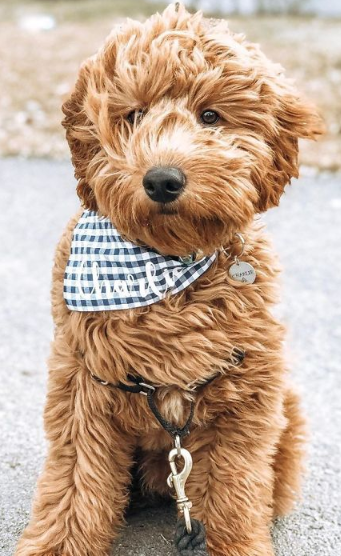
LargeGoldendoodle Hybrid
The perfect hybrid — the Golden's heart with the Poodle's brains. Low-shedding and highly trainable.
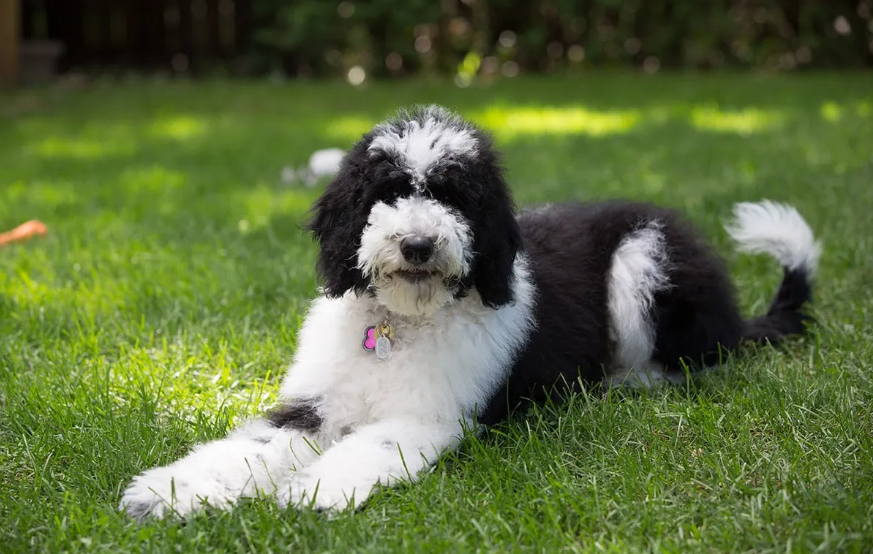
LargeSheepadoodle Hybrid
The gentle giant doodle — Old English Sheepdog meets Poodle for a fluffy black-and-white family dog who loves children and therapy work.
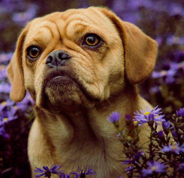
SmallPuggle Hybrid
The charming Beagle-Pug combo — playful, wrinkly, and endlessly entertaining. The most popular designer dog of the 2000s.
 Small
SmallCavachon Hybrid
Sweet, silky Cavalier × Bichon mix — gentle, low-shedding, and endlessly cuddly.
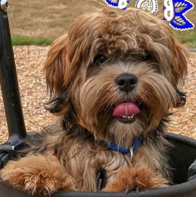
SmallMorkie Hybrid
Silky micro-pup with Maltese sweetness and Yorkie spunk — huge personality, tiny body.
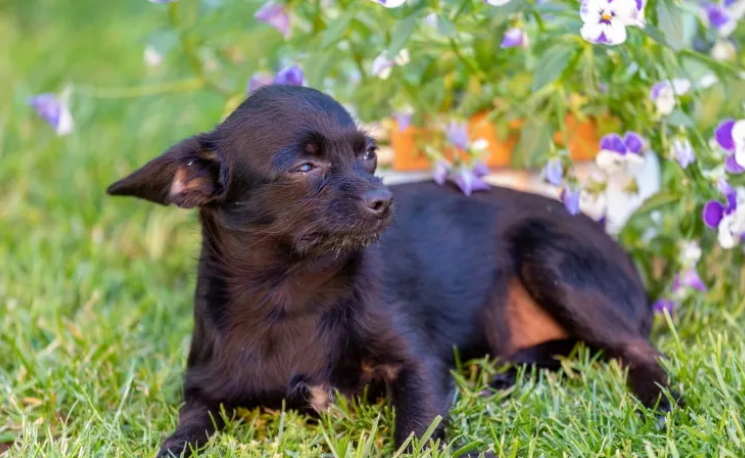
SmallChi-Poo Hybrid
Tiny Chihuahua × Poodle mix — smart, sassy, and surprisingly low-shedding.
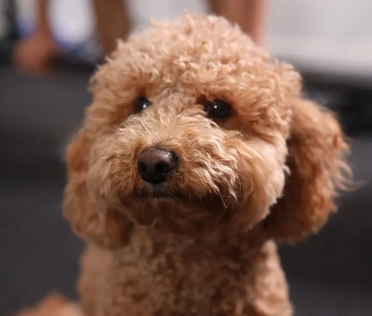
SmallHavapoo Hybrid
Joyful Havanese × Poodle blend — fluffy, friendly, and nearly non-shedding.
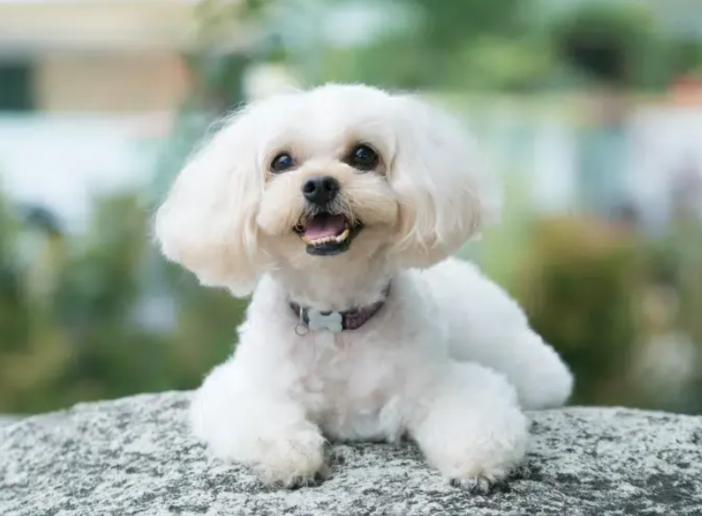
SmallShih-Poo Hybrid
Shih Tzu × Poodle — long-lived, low-shedding, and absolutely adorable.
 Large
LargeGoberian Hybrid
Golden Retriever × Husky — stunning, athletic, and endlessly enthusiastic.
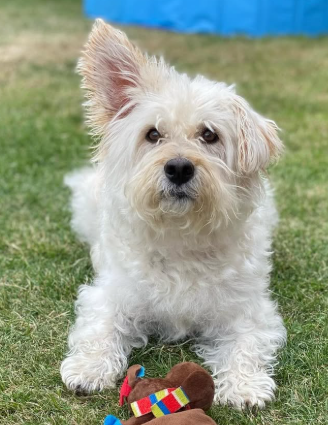
SmallWestiepoo Hybrid
Westie × Poodle — bold, bright, low-shedding, and long-lived.
 Large
LargeBoxerdoodle Hybrid
Boxer × Poodle — playful, loyal, and surprisingly low-shedding.
 Large
LargeGoldador Hybrid
Golden Retriever × Labrador — the friendliest possible dog in one package.
 Large
LargeLabsky Hybrid
Labrador × Husky — adventurous, loyal, and built for the great outdoors.
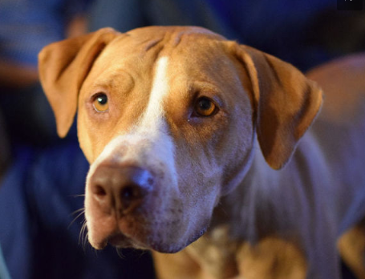
LargeLabrabull Hybrid
Labrador × Pit Bull — athletic, loyal, and devoted to family.
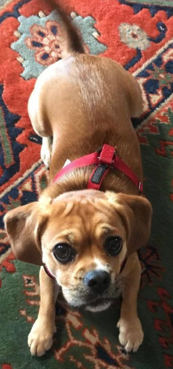
SmallCocker Pug Hybrid
Cocker Spaniel × Pug — playful, affectionate, and apartment-friendly.
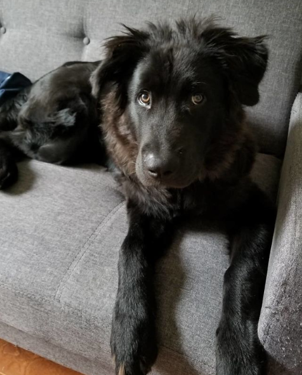
LargeChabrador Hybrid
Labrador × Chow Chow — loyal, dignified, and protective.
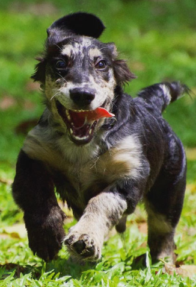
MediumGoldenshund Hybrid
Golden Retriever × Dachshund — friendly, affectionate, and fun-loving.
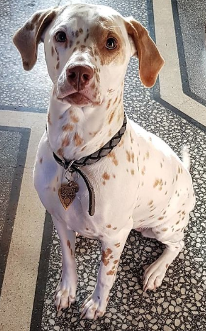
LargeDalmador Hybrid
Labrador × Dalmatian — athletic, outgoing, and full of energy.
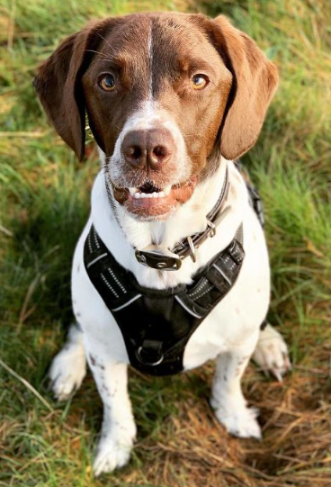
LargeLabradinger Hybrid
Labrador × English Springer Spaniel — energetic, devoted family gundog.
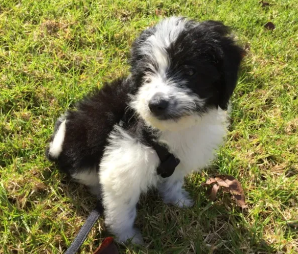
MediumBordoodle Hybrid
Border Collie × Poodle — the ultimate brainy, athletic, low-shedding companion.
 Medium
MediumSpringerdoodle Hybrid
English Springer Spaniel × Poodle — enthusiastic, kind, and low-shedding.
 Large
LargeSaint Berdoodle Hybrid
Saint Bernard × Poodle — a massive, gentle, low-shedding giant.
 Medium
MediumHuskydoodle Hybrid
Siberian Husky × Poodle — dramatic, chatty, stunning, and low-shedding.
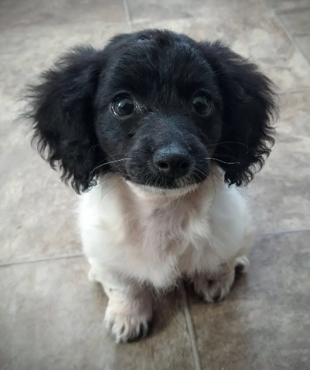
SmallDoxiepoo Hybrid
Dachshund × Poodle — curious, clever, low-shedding, and uniquely adorable.
 Small
SmallMaltichon Hybrid
Maltese × Bichon Frise — a cloud-like white companion that almost never sheds.
 Large
LargeRottador Hybrid
Rottweiler × Labrador — a powerful, loyal protector with a Lab's gentle heart.
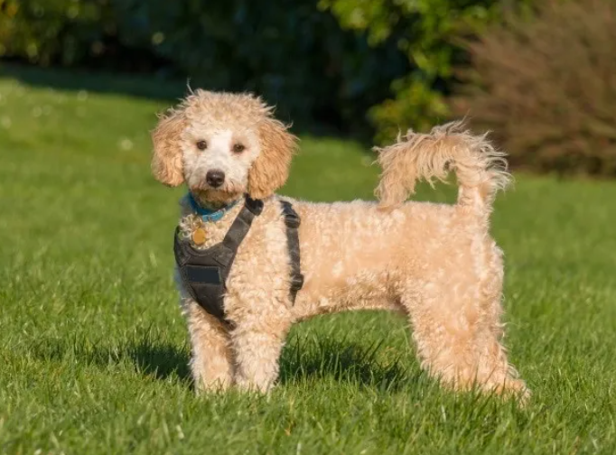
SmallPoochon Hybrid
Bichon Frise × Poodle — fluffy, hypoallergenic, and endlessly cheerful. The perfect lap companion.
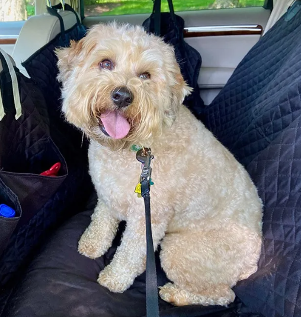
MediumWhoodle Hybrid
Soft Coated Wheaten Terrier × Poodle — silky wavy coat, playful temperament, low-shedding and family-friendly.
 Large
LargeShepadoodle Hybrid
German Shepherd × Poodle — brilliant, loyal, and protective with a low-shedding Poodle coat.
 Large
LargeBorador Hybrid
Border Collie × Labrador — blazing smart, energetic, and eager to please. Ideal for active families.
 Small
SmallPugapoo Hybrid
Pug × Poodle — the Pug's clownish charm meets the Poodle's brains for a low-shedding, funny companion.
 Small
SmallJackadoodle Hybrid
Russell Terrier × Poodle — big energy in a small body. Feisty, clever, and surprisingly low-shedding.
G3
 Small
SmallValencian Terrier
Spain's lively Valencian rat-hunting terrier (Gos Rater Valencià) — compact, athletic, and very rare outside Valencia.
FCI G3
Russell Terrier
Reverend John Russell's fearless fox-bolting terrier from Devon — compact, clever, and brimming with spirit that belies its small frame.
 Large
LargeBoxador Hybrid
Boxer × Labrador — athletic, goofy, and fiercely loyal. A high-energy family dog with a big heart.
 Small
SmallCorgipoo Hybrid
Corgi × Poodle — the Corgi's big personality and herding smarts with a low-shedding Poodle coat.
 Small
SmallFrenchton Hybrid
French Bulldog × Boston Terrier — compact, social, and apartment-perfect with fewer breathing issues than a Frenchie.
 Small
SmallChug Hybrid
Chihuahua × Pug — huge personality in a tiny package. Sassy, loving, and always the center of attention.
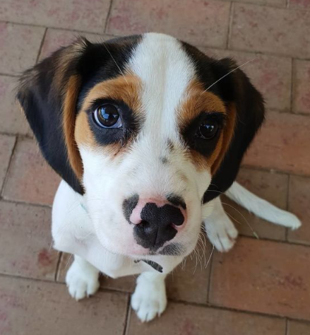
SmallBeaglier Hybrid
Beagle × Cavalier King Charles Spaniel — gentle, curious, and social. Less scent-obsessed than a pure Beagle.
 Small
SmallMal-Shi Hybrid
Maltese × Shih Tzu — silky, gentle, and royally adorable. A low-shedding lap dog that loves everyone.
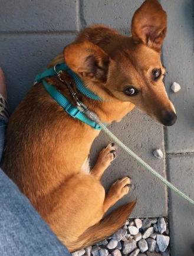
SmallDorgi Hybrid
Dachshund × Corgi — famously adored by Queen Elizabeth II. Long-bodied, short-legged, and full of character.
 Small
SmallCheagle Hybrid
Chihuahua × Beagle — a tiny hound with a big nose and an even bigger attitude. Spirited and curious.
 Large
LargeBullador Hybrid
English Bulldog × Labrador — sturdy, calm, and devoted. Gets the Lab's friendliness with the Bulldog's laid-back vibe.
 Small
SmallBugg Hybrid
Boston Terrier × Pug — compact, comical, and social. The "tuxedo dog" meets the clown for pure apartment joy.
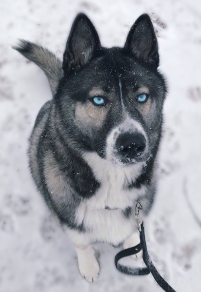
LargeGerberian Shepsky Hybrid
German Shepherd × Siberian Husky — wolf-like beauty, striking eyes, fierce loyalty, and boundless energy.
 Large
LargeSheprador Hybrid
German Shepherd × Labrador — intelligent, loyal, and endlessly versatile. Popular as police, service, and family dogs.
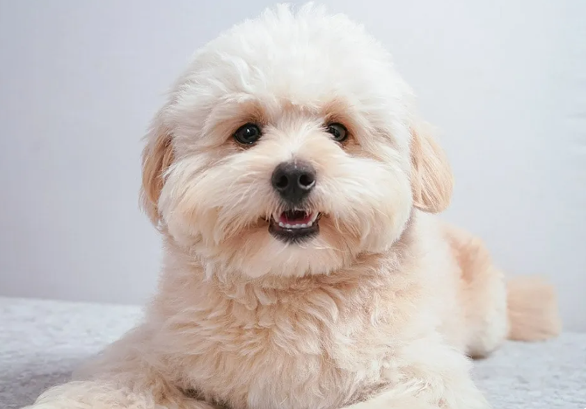
SmallPomapoo Hybrid
Pomeranian × Poodle — a living teddy bear. Fluffy, charming, and low-shedding with a feisty Pom personality.
 😂Small
😂SmallJug Hybrid
Jack Russell × Pug — the Pug's snorty charm meets the Jack Russell's spirited energy for a hilarious small companion.
 Medium
MediumCorgidor Hybrid
Corgi × Labrador — the Lab's friendliness with Corgi's herding wit. An athletic medium dog perfect for active homes.
 Large
LargeIrish Doodle Hybrid
Irish Setter × Poodle — stunning auburn waves, elegant gait, and an outgoing personality that lights up every room.
 Medium
MediumWoodle Hybrid
Welsh Terrier × Poodle — alert, spirited, and low-shedding. An underrated gem for active families.
 Large
LargePitsky Hybrid
Pitbull × Siberian Husky — powerful, striking blue eyes, and deeply loyal. Needs an experienced active owner.
 Large
LargeDalmadoodle Hybrid
Dalmatian × Poodle — spots meet curls for a striking, athletic dog that's low-shedding and endlessly energetic.
 Small
SmallChiweenie Hybrid
Chihuahua × Dachshund — spunky, bold, and long-bodied. The "Mexican Hotdog" is endearingly fearless.
 Small
SmallPomchi Hybrid
Pomeranian × Chihuahua — tiny, fluffy, and fiercely devoted. A big-dog personality crammed into a purse-dog body.
 Small
SmallPeekapoo Hybrid
Pekingese × Poodle — one of the original designer dogs. Regal, cuddly, and low-shedding with ancient Chinese roots.
 Small
SmallCavapoochon Hybrid
Cavalier × Bichon Frise × Poodle — the "forever puppy." Triple-hybrid that rarely sheds and ages with puppy-like looks.
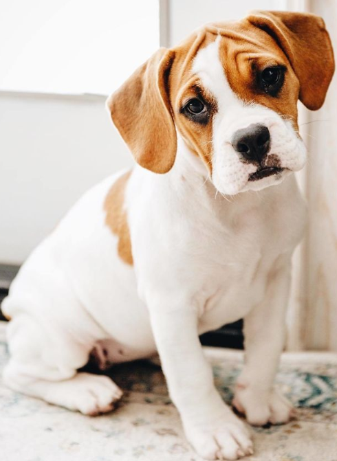
MediumBeabull Hybrid
Beagle × English Bulldog — sturdy and curious with a wrinkled nose and a gentle, easy-going personality.
 Small
SmallScoodle Hybrid
Scottish Terrier × Poodle — bold, dignified, and low-shedding. The Scottie's feisty independence meets Poodle smarts.
 Large
LargeAiredoodle Hybrid
Airedale Terrier × Poodle — brave, smart, and athletic. The "King of Terriers" meets the world's most intelligent dog.
 Large
LargeSammypoo Hybrid
Samoyed × Poodle — a fluffy white cloud of a dog with the Samoyed's eternal smile and a low-shedding Poodle coat.
 Large
LargeDoberdoodle Hybrid
Doberman × Poodle — sleek, powerful, and razor-sharp. A low-shedding guardian with elite intelligence.
 Medium
MediumHorgi Hybrid
Corgi × Siberian Husky — fluffy, wolf-like, and comically low-slung. Viral-famous for its adorable proportions.
 Large
LargeAussiedor Hybrid
Australian Shepherd × Labrador — merle beauty meets Lab friendliness for a versatile, athletic family companion.
 Large
LargePyredoodle Hybrid
Great Pyrenees × Poodle — a majestic white giant that's calm, protective, and surprisingly low-shedding.
 Large
LargeNewfiedoodle Hybrid
Newfoundland × Poodle — a massive, gentle water-lover with a low-shedding coat. Born to be a therapy dog.
 Large
LargeGoldmaraner Hybrid
Golden Retriever × Weimaraner — sleek, athletic, and strikingly beautiful. Made for outdoor adventures and loyal companionship.
 Large
LargeRottsky Hybrid
Rottweiler × Siberian Husky — powerful, wolf-like, and intensely loyal. A striking mix for experienced dog owners.
 Small
SmallLhasapoo Hybrid
Lhasa Apso × Poodle — an ancient Tibetan watchdog meets Poodle brains. Calm, loyal, and surprisingly assertive.
 Small
SmallPooton Hybrid
Poodle × Coton de Tulear — rare, cotton-soft, and hypoallergenic. A gentle companion with an angelic white coat.
 Large
LargeRottle Hybrid
Rottweiler × Poodle — a powerful guardian with a low-shedding curly coat. Intelligent, brave, and deeply loyal.
 Large
LargeMastidoodle Hybrid
Mastiff × Poodle — a gentle giant with a low-shedding coat. Calm, courageous, and utterly devoted to family.
 Large
LargeGreat Danoodle Hybrid
Great Dane × Poodle — towering, graceful, and low-shedding. The "Apollo of Dogs" reimagined with Poodle intelligence.
 Large
LargeWeimardoodle Hybrid
Weimaraner × Poodle — the "Gray Ghost" meets curly intelligence. A sleek, athletic dog with minimal shedding.
 Large
LargeBeagador Hybrid
Beagle × Labrador — two of America's most-loved breeds in one. Friendly, curious, and a nose that never quits.
 Large
LargeChusky Hybrid
Chow Chow × Siberian Husky — a lion-maned, wolf-like dog with a proud, independent spirit and striking looks.
 🦇Small
🦇SmallFroodle Hybrid
French Bulldog × Poodle — bat ears meet curly charm. Low-shedding, apartment-ideal, and hilariously entertaining.
 Medium
MediumCorman Shepherd Hybrid
Corgi × German Shepherd — a foxlike herder with the GSD's loyalty and protective instincts in a compact frame.
 Large
LargeAkita Shepherd Hybrid
Akita × German Shepherd — dignified, powerful, and fiercely loyal. A formidable working dog with ancient Japanese roots.
 Large
LargeGollie Hybrid
Golden Retriever × Collie — two of the most beloved breeds combined. Beautiful, intelligent, and endlessly gentle.
 Medium
MediumHusky Inu Hybrid
Siberian Husky × Shiba Inu — two spitz breeds combine for a fox-like, independent, and strikingly beautiful dog.
 Small
SmallPom-A-Pug Hybrid
Pomeranian × Pug — fluffy meets snorty for a comical, spirited little dog that loves being the life of the party.
 Medium
MediumBagel Hound Hybrid
Basset Hound × Beagle — droopy ears, a world-class nose, and a perpetually sleepy expression. Endearingly slow-paced.
 Large
LargeBassador Hybrid
Basset Hound × Labrador — the Lab's friendly energy tempered by the Basset's laid-back, nose-first approach to life.
 Medium
MediumHuskimo Hybrid
American Eskimo × Siberian Husky — two Arctic breeds united. Fluffy, bright-eyed, and built for cold-weather adventure.
 Small
SmallAffenpoo Hybrid
Affenpinscher × Poodle — the "Monkey Terrier" meets curly intelligence. Scruffy, funny, and surprisingly low-shedding.
 Small
SmallBossipoo Hybrid
Boston Terrier × Poodle — a tuxedoed charmer with a low-shedding curl. Smart, alert, and perfectly apartment-sized.
 Small
SmallFoodle Hybrid
Fox Terrier × Poodle — a wiry, quick-witted terrier with low-shedding Poodle curls. Alert, energetic, and endlessly curious.
 Small
SmallCairnoodle Hybrid
Cairn Terrier × Poodle — Toto's scrappy cousin with low-shedding curls. Plucky, smart, and always up for an adventure.
 Medium
MediumSpoodle Hybrid
English Cocker Spaniel × Poodle — wavy, gentle, and keen. Australia's favourite family dog with a sporting heritage.
 Large
LargeLabmaraner Hybrid
Labrador × Weimaraner — a sleek, high-energy athlete that bonds fiercely with family. A hunter's dog with a loving soul.
 Large
LargeFlandoodle Hybrid
Bouvier des Flandres × Poodle — a powerful working dog with a low-shedding coat. Rare, intelligent, and deeply loyal.
 Medium
MediumPortidoodle Hybrid
Portuguese Water Dog × Poodle — double the water-loving, double the curl, and nearly zero shedding. Built for the coast.
 Large
LargeRafeiro do Alentejo
Portugal's massive ancient guardian of the Alentejo plains — one of Europe's largest molossoid breeds, with millennia of wolf and bear protection heritage.
 Large
LargeIrish Wolfadoodle Hybrid
Irish Wolfhound × Poodle — among the tallest of all hybrids. A gentle, shaggy giant with a calm, sensitive soul.
 Large
LargeChow Shepherd Hybrid
Chow Chow × German Shepherd — a lion-maned, deeply loyal guardian that bonds intensely with its family.
 Large
LargeGolden Mountain Dog Hybrid
Golden Retriever × Bernese Mountain Dog — a stunning tricolor teddy bear with the Golden's warmth and the Berner's calm strength.
 Large
LargeDouble Doodle Hybrid
Goldendoodle × Labradoodle — a triple-heritage doodle with Golden, Lab, and Poodle DNA. Gentle, low-shedding, and endlessly lovable.
Atlas Mountain Dog
Morocco's Atlas Mountain guardian — fearless flock protector with a powerful build and weather-resistant coat.
 Medium
MediumAlpine Dachsbracke
Austria's sturdy mountain scent hound — short-legged, tenacious tracker built for rugged alpine terrain.
FCI G8
 🐕Medium
🐕MediumCocker Spaniel
America's classic sporting spaniel — silky coat, soulful eyes, and a cheerful, gentle temperament.
Andalusian Terrier
Spain's spirited bodega ratter — agile, bold, and endlessly energetic with a wiry white coat.
Medium-Sized Anglo-French Hound
French-English pack hound — fast, melodious, and built for small-game hunting in the field.
Appenzeller Sennenhund
The most spirited Swiss mountain dog — tricolor, athletic, and born to herd and guard alpine farms.
Ariege Pointing Dog
France's elegant southern pointer — powerful, passionate hunter with a refined white and orange coat.
Ariegeois
Refined French pack hound from the Ariège — elegant, melodious voice, built for hare hunting.
Artois Hound
Ancient French scent hound rescued from near-extinction — steady, capable nose hound with tricolor markings.
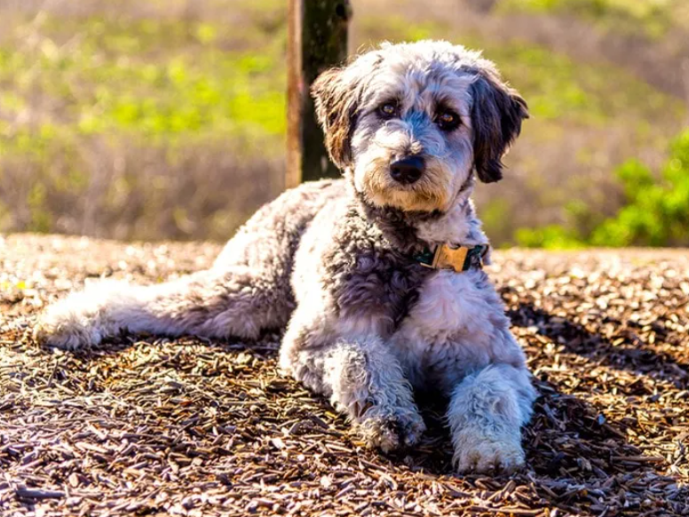
MediumAussiedoodle Hybrid
Australian Shepherd × Poodle — brilliantly smart, low-shedding, and stunning in merle or tricolor.
Australian Kelpie
Australia's tireless sheep herder — exceptional work ethic, boundless energy, and a devoted working spirit.
Australian Stumpy Tail Cattle Dog
Australia's natural bobtail drover — the original cattle dog with a docked-looking tail and fierce work drive.
Belgian Shepherd
Four varieties in one FCI breed — Groenendael, Tervuren, Malinois, and Laekenois. Brilliant, athletic, and loyal.
Austrian Black and Tan Hound
Austria's mountain scent hound — sure-footed tracker with striking black-and-tan markings and great stamina.
Bosnian Broken-Haired Hound
Bosnia's wire-haired scent hound — rugged, persistent tracker built for the Balkan wilderness.
Norman Artesien Basset
France's short-legged Norman hound — longer than a basset, with a melodious voice and easygoing charm.
 Medium
MediumBlue Gascony Basset
France's blue-mottled scent hound — ancient Gascon breed with a haunting voice and excellent nose.
Basset Fauve de Bretagne
Brittany's fawn-coated short-legged hound — game, versatile tracker that doubles as a cheerful companion.
Bavarian Mountain Scent Hound
Germany's specialist blood tracker — calm, focused, and exceptional at following wounded game on cold trails.
Beagle-Harrier
France's elegant pack hound — a purposeful cross of Beagle and Harrier, prized for speed and endurance.
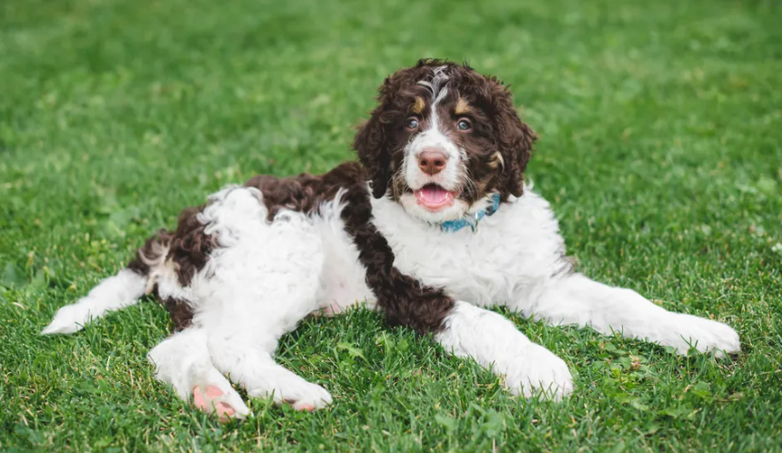
LargeBernedoodle Hybrid
Bernese Mountain Dog × Poodle — gentle giant with a gorgeous tricolor wavy coat and a goofy, loving soul.
Billy
France's rare white pack hound — developed by the Hublot de Rivault family to hunt boar and deer.
Black Norwegian Elkhound
Norway's sleek black spitz — smaller and darker than the gray variety, bred to track moose in dense forest.
Blue Picardy Spaniel
France's blue-roan gun dog — rare, devoted hunting spaniel with a speckled coat and exceptional nose.
Bolognese
Italy's fluffy Renaissance lapdog — devoted, quiet, and loyal with a distinctive pure-white cotton coat.
Bouvier des Ardennes
Belgium's rugged Ardennes cattle herder — rough-coated, fearless, and full of working energy.
Auvergne Pointer
France's elegant black-speckled pointer from Auvergne — stylish, passionate hunter and loyal companion.
 Large
LargeFrench Pointing Dog - Gascogne Type
Ancient French pointer's large variety — powerful, hound-like build, outstanding nose, centuries of pointing heritage from Gascony.
MediumFrench Pointing Dog - Pyrenean Type
Ancient French pointer's compact variety — gentle woodcock specialist, hidden gem of North American bird hunting.
Saint Germain Pointer
France's aristocratic royal pointer — elegant white-and-orange coat, refined style, and a keen hunting nose.
Brazilian Terrier
Brazil's only native purebred — lively, intelligent tricolor terrier with boundless energy and fox-like looks.
Briquet Griffon Vendeen
Medium-sized wire-haired Vendéen hound — cheerful, tenacious, and known for its expressive moustached face.
 Large
LargeBroholmer
Denmark's ancient estate guardian — calm, powerful, and loyal with a lion-like golden-fawn coat.
Romanian Bucovina Shepherd
Romania's fearless Carpathian guardian — powerful white-and-dark livestock protector with centuries of history.
Burgos Pointing Dog
Spain's ancient versatile pointer — calm, powerful liver-and-white gun dog from the Castile highlands.
Majorca Shepherd Dog
Mallorca's versatile black shepherd — agile, loyal herding and guard dog from the Balearic Islands.
Majorca Mastiff
Mallorca's Majorcan Bulldog — calm, compact Molossian guard dog with brindle coat and fearless character.
Campeiro Bulldog
Brazil's working ranch bulldog — athletic, loyal cattle driver with more stamina than any modern bulldog.
Canadian Eskimo Dog
One of North America's oldest breeds — the Inuit's powerful Arctic sled dog, now critically rare.
 Large
LargeCastro Laboreiro Dog
Portugal's ancient mountain village guardian — famous for its eerie wolf-like warning howl and fierce loyalty.
Transmontano Mastiff
Portugal's massive mountain livestock guardian — one of the largest Iberian breeds, fearless and devoted.
Romanian Carpathian Shepherd Dog
Romania's ancient wolf-gray mountain guardian — bred to defend flocks from wolves and bears for millennia.
 Giant
GiantCaucasian Shepherd Dog
Russia's mighty bear dog — one of the world's largest guardian breeds, fearless and deeply devoted to family.
Central Asian Shepherd Dog
Ancient, fearless livestock guardian of the Central Asian steppes — 5,000 years of natural selection in one powerful dog.
 Small
SmallCavapoo Hybrid
Cavalier × Poodle — sweet-natured, low-shedding, and irresistibly soft. One of the UK's most popular crossbreeds.
 Medium
MediumBohemian Wirehaired Pointing Griffon
Czech Republic's wire-haired versatile gun dog — passionate hunter, loyal companion, and national pride.
French White and Black Hound
France's striking black-and-white pack scenthound — built for relentless pursuit of deer and boar across varied terrain.
French White and Orange Hound
The rarest of France's three grand scenthounds — elegant white-and-orange coloring with an exceptional nose.
French Tricolour Hound
The most widespread of France's three grand scenthounds — bold, enduring tricolor pack hunter in the finest French tradition.
Croatian Shepherd Dog
Croatia's ancient curly-coated shepherd — documented unchanged since 1374, always black, and tireless in the field.
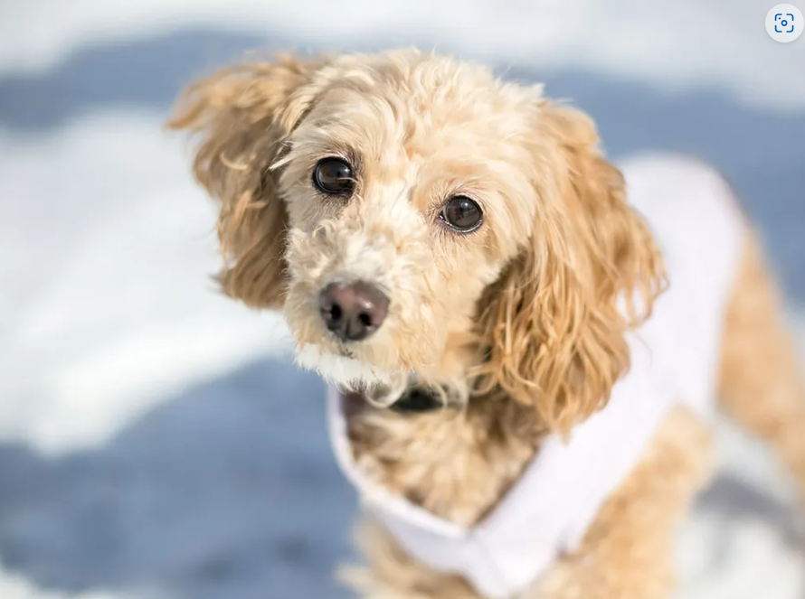
SmallCockapoo Hybrid
Cocker Spaniel × Poodle — the original designer dog. Soft curls, waggy tail, and a heart full of love.
 Large
LargeCzechoslovakian Wolfdog
Part German Shepherd, part Carpathian wolf — athletic, wolf-like, and intensely bonded to its owner.
 Medium
MediumDrentsche Partridge Dog
The Netherlands' versatile partridge dog — calm, devoted family companion with natural pointing ability.
FCI G1
 Large
LargeDutch Shepherd
The Netherlands' brindle all-rounder — the only herder with a tiger-stripe coat, now rising as a top police and military breed worldwide.
 Small
SmallDrever
Sweden's most popular hunting hound — short-legged, persistent deer tracker and Sweden's official national dog.
 Medium
MediumNorwegian Hound
Norway's blue-merle hare hound — steady, enduring tracker with a striking marbled coat pattern.
 Large
LargeEast Siberian Laika
Russia's largest Laika — centuries-old taiga hunting partner of indigenous Siberian peoples, tracking bear, elk, and sable.
 Small
SmallEnglish Toy Terrier
England's sleek, endangered miniature terrier — just a few hundred registered yearly worldwide, with genuine terrier fire in a tiny frame.
 Medium
MediumEstonian Hound
The only dog breed native to Estonia — a compact Soviet-era scenthound built for Baltic forest hunting, vocal and tenacious.
 Giant
GiantFila Brasileiro
Brazil's supreme guardian — massively powerful, intensely loyal to family, and instinctively suspicious of all strangers.
 Medium
MediumFinnish Hound
Finland's most popular breed — a cheerful, deep-voiced tracker of hare and fox across snowy Nordic forests.
 Medium
MediumFrench Spaniel
France's oldest spaniel — a 14th-century pointing and retrieving bird dog, calm, trainable, and beloved in Quebec.
 Large
LargeSpanish Greyhound
Spain's ancient greyhound — 2,000 years of coursing heritage, lightning speed, and quiet couch-loving devotion as a companion.
 Large
LargeGascon Saintongeois
France's aristocratic large pack hound — noble, deep-voiced, built for mounted deer and boar hunting in the grand French tradition.
 Medium
MediumGerman Hound
Germany's only surviving bracke — a rare tricolor Westphalian scent tracker with roots stretching back to the Middle Ages.
Deutsch Langhaar
Germany's elegant silky-coated all-rounder — a versatile gun dog that points, retrieves, and tracks on both land and water.
 Medium
MediumGerman Spaniel
Germany's rugged forest hunter — a tenacious flushing, blood-tracking, and retrieving specialist bred exclusively for licensed hunters.
 Small
SmallGerman Spitz
One of Europe's oldest breeds — lively, devoted, magnificently fluffy in five sizes, ancestor to the Pomeranian and many spitz breeds.
 Medium
MediumPolish Hunting Dog
Poland's historic pack hunter — a melodious black-and-tan scenthound with centuries of forest heritage, nearly lost after WWII.
 Medium
MediumHalden Hound
Norway's rare tricolor hare hound — lightly built, fast, and bred to hunt alone over snowy Norwegian terrain.
 Large
LargeGreat Anglo-French White and Black Hound
France's great black-and-white pack hunter — English Foxhound speed meets French scenthound endurance for mounted deer and boar hunts.
 Large
LargeGreat Anglo-French White and Orange Hound
The rarest of the Grand Anglo-Français trio — white and orange French-English pack hound built for grande vénerie.
 Large
LargeGreat Anglo-French Tricolour Hound
The most numerous Grand Anglo-Français — France's tricolor grande vénerie pack hound combining French nose with English pace.
 Large
LargeGreat Gascony Blue
One of France's most ancient hounds — majestic blue-mottled coat, extraordinary cold nose, and a bell-like voice prized by King Henry IV.
 Large
LargeGrand Griffon Vendeen
The largest Vendéen rough-coat — fearless ancestor of the PBGV, built for boar hunting through the dense bocage of western France.
 Large
LargeGreenland Dog
One of the world's oldest working breeds — a powerful Arctic sled dog with 4,000 years of Inuit heritage and polar expedition history.
 Medium
MediumBlue Gascony Griffon
The rough-coated Gascon blue — a rare wire-coated French scenthound with the distinctive blue mottled pattern, built for dense cover hunting.
 Medium
MediumFawn Brittany Griffon
France's ancient fawn wire-haired pack hound — used by French royalty to hunt wolves, nearly extinct after WWII, now lovingly restored.
 Medium
MediumGriffon Nivernais
The wolf-gray rough-coated hound of the Morvan highlands — one of France's most ancient breeds, rebuilt from near-extinction after WWI.
 Large
LargeHanoverian Scent Hound
Germany's elite blood tracker — a calm, powerful specialist that can follow a 40-hour-old wound trail no other hound can find.
 Medium
MediumHellenic Hound
Greece's ancient scent hound — the Ichnilatis, a passionate and melodious hare tracker with deep roots.
 Medium
MediumHokkaido
Japan's ancient bear-hunting Spitz from Hokkaido island — deeply loyal, fearless, and one of the oldest primitive breeds still used in the wild.
 Large
LargeHovawart
Germany's ancient estate guardian — loyal, versatile, and intelligent with a beautiful golden or black coat.
 Medium
MediumHygen Hound
Norway's robust reddish hare hound — hardy, determined tracker bred for cold Scandinavian conditions.
 Medium
MediumIstrian Shorthaired Hound
Croatia's elegant ancient scent hound — white and orange, with a refined appearance and musical voice.
 Medium
MediumIstrian Wirehaired Hound
Croatia's wire-coated scent hound — ancient Balkan hunter with a remarkable nose, paired with the Istrian Shorthaired as a national working dog.
 Large
LargeJamthund
Sweden's national dog — the Swedish Elkhound, a large, powerful moose hunter and devoted Nordic companion.
 Large
LargeLabradoodle Hybrid
The original Doodle — Lab loyalty meets Poodle smarts and low-shed coat. Top choice for allergy sufferers.
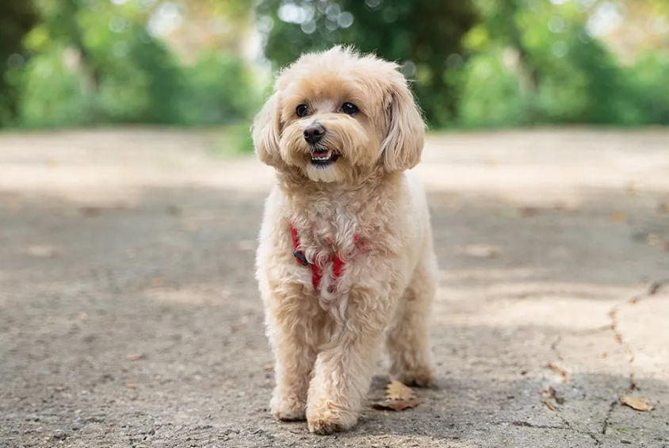
SmallMaltipoo Hybrid
Maltese × Poodle — tiny, fluffy, and irresistibly sweet. Hypoallergenic-friendly and deeply affectionate.
 Medium
MediumPicardy Spaniel
France's oldest spaniel breed — rustic, calm, and gifted for flushing and retrieving across varied terrain.
 Large
LargePolish Hunting Dog
Poland's national scent hound — powerful, melodious Ogar Polski, versatile tracker of large game.
 Small
SmallPomsky Hybrid
Pomeranian × Husky — the internet's favorite fluffy wolf look-alike in a small, spirited package.
 Medium
MediumPortuguese Pointer
Portugal's ancient Perdigueiro — one of the oldest pointing breeds, with a warm fawn coat and velvet ears.
 Medium
MediumPosavatz Hound
Croatia's ancient reddish scent hound from the Posavina valley — persistent tracker and devoted companion.
 Medium
MediumPudelpointer
Germany's wire-haired versatile gun dog — Poodle intelligence meets Pointer drive for a supreme all-rounder.
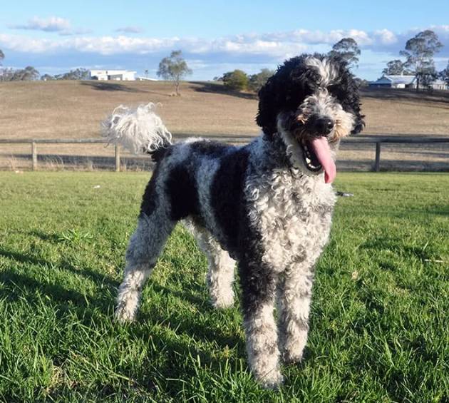
SmallSchnoodle Hybrid
Schnauzer × Poodle — alert, low-shedding, and clever. A perky companion with Schnauzer spirit and Poodle smarts.
 Small
SmallShorkie Hybrid
Shih Tzu × Yorkshire Terrier — feisty little lap dog with a big personality and a silky, low-shed coat.
 Large
LargeSpanish Hound
Spain's ancient Sabueso Español — one of Europe's oldest scent hounds, powerful tracker with a bell-like voice.
 Medium
MediumHungarian Hound - Transylvanian Scent Hound
Hungary's ancient royal hunting hound — the Erdélyi Kopó, a black-and-tan scent hound of noble heritage.
 Medium
MediumTyrolean Hound
Austria's versatile alpine scent hound — tricolor tracker built for cold mountain terrain and cold-blood trailing.
 Large
LargeWirehaired Slovak Pointer
Slovakia's versatile wire-haired gun dog — the Slovenský Hrubosrstý Stavač, a calm and capable all-rounder.
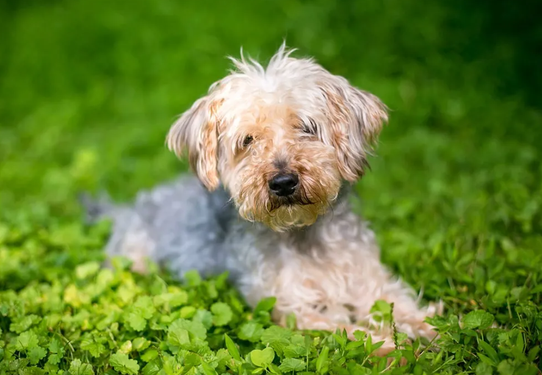
SmallYorkipoo Hybrid
Yorkshire Terrier × Poodle — bold, bright-eyed, and low-shedding. Big terrier attitude in a tiny, curly package.
 Large
LargeSouth Russian Shepherd Dog
The colossal, shaggy guardian of the Ukrainian steppes — a fearless, deeply independent livestock protector bred to fight wolves and bears.
 Large
LargeBosnian and Herzegovinian - Croatian Shepherd Dog
Bosnia & Herzegovina's ancient mountain guardian with over 1,000 years of documented history — calmer and more family-friendly than most livestock guardians.
 Small
SmallGerman Hunting Terrier
Germany's fearless all-purpose hunting terrier — goes underground after fox and badger, bays wild boar, and retrieves waterfowl. Mandatory working trials for all breeding stock.
G5
 Medium
MediumYakutian Laika
Russia's ancient Arctic sled and hunting dog from Yakutia — one of the world's oldest sled breeds, revived from near-extinction and FCI recognized in 2019.
 Medium
MediumWest Siberian Laika
Russia's most genetically primitive and versatile hunting spitz — tracks bear, elk, and sable across the Siberian taiga with extraordinary endurance.
 Medium
MediumSchillerstovare
Sweden's fastest and most elegant hound — the striking tan-and-black Schiller Hound, celebrated for its speed across snow and its beautiful melodious voice.
 Medium
MediumPont-Audemer Spaniel
France's rare and charming Norman water spaniel — the joyful "little clown of the marshes," a curly-coated gun dog with exceptional skill in wet and marshy terrain.
 Medium
MediumSmalandsstovare
Sweden's oldest native hound — a hardy, compact black-and-tan scent hound from Småland province, bred for centuries to track hare and fox through rocky forest terrain.
 Medium
MediumSlovakian Hound
Slovakia's courageous black-and-tan forest hunting hound — a tough, versatile scent hound with exceptional endurance, bred to track and bay wild boar through dense Carpathian forest.
 Large
LargeSaint Miguel Cattle Dog
The powerful cattle-herding guardian of the Azores — a courageous, loyal working dog evolved in complete isolation on São Miguel Island, specialized for gripping and controlling Azorean cattle.
 Small
SmallJapanese Terrier
Japan's rarest native terrier — a lively, elegant toy companion with a striking tricolor coat, descended from smooth fox terriers brought by Dutch traders to Nagasaki in the 18th century.
 Large
LargeKazakh Tazy
The ancient sighthound of the Kazakh steppe — a swift, graceful coursing dog with deep nomadic heritage, traditionally used alongside golden eagles in the berkutchi hunting tradition of Central Asia.
 Medium
MediumKintamani-Bali Dog
Indonesia's only FCI-recognized breed — Bali's sacred highland dog from the volcanic crater region of Lake Batur, an independent primitive spitz with a distinctive stand-off white coat.
G1
 Medium
MediumRomanian Raven Shepherd Dog
Romania's rare black herding shepherd — named "Corb" (raven) for its dark coat, a traditional livestock herder very rare outside Romania.
 Large
LargeRomanian Mioritic Shepherd Dog
Romania's ancient giant flock guardian — a massive, shaggy livestock protection dog from the Carpathian mountains, named for Romania's most famous folk ballad, fearless against wolves and bears.
 Large
LargeSpanish Mastiff
Spain's ancient giant livestock guardian — one of the heaviest breeds on earth, protecting merino sheep from Iberian wolves for over 2,000 years on the great seasonal migrations across Spain.
 Medium
MediumKleiner Münsterländer
Germany's elegant medium-sized all-rounder — a superb pointer and water retriever from Münsterland equally accomplished on upland birds and waterfowl, with an exceptionally devoted family temperament.
 Small
SmallWestphalian Dachsbracke
Germany's compact short-legged tracking hound from Westphalia — a tenacious tricolor scenthound that follows game through the densest terrain, and the direct ancestor of Sweden's Drever.
 Medium
MediumWetterhoun
The Dutch Frisian water dog — a tough, oily-coated otter hunter from the canals of Friesland, one of the rarest FCI breeds on earth and a treasured part of Dutch cultural heritage.
 Large
LargeCollie Smooth
The Rough Collie in a short coat — the same exceptional intelligence, loyalty, and gentle family temperament with dramatically less grooming. A rare and underappreciated gem.
 Large
LargeAmerican Akita
The larger, more varied American type of Japan's iconic Akita — powerful, dignified, and fiercely loyal guardian developed after World War II.
 Medium
MediumAustrian Pinscher
Austria's lively farm and watchdog — alert, loyal, and hardy with a rough double coat in yellow or red-brown markings.
 Large
LargeCanarian Warren Hound
The ancient hunting dog of the Canary Islands — sleek, fast, and tireless with a striking red-and-white short coat.
 Large
LargePolish Greyhound
Poland's ancient sighthound bred by nobility — one of the tallest coursing dogs, independent and courageous with a sleek athletic build.
 Large
LargeDeutsch Stichelhaar
Germany's versatile rough-haired pointing dog — one of the oldest German pointer breeds with exceptional hunting ability in all terrains.
 Small
SmallDutch Smoushond
The cheerful Dutch companion nearly lost after WWII — rough yellow coat, friendly temperament, and a loyal heart revived by dedicated breeders.
Kromfohrlander
Germany's rare post-WWII companion — born from a chance encounter with a stray dog, available in smooth or wirehaired coat, remarkably cheerful and long-lived.
 Large
LargeHungarian Greyhound
Hungary's ancient sighthound — brought by the Magyar tribes from the Asian steppe, fast, loyal, and a calm sofa companion at home.
 Medium
MediumMontenegrin Mountain Hound
Montenegro's ancient hunting hound — rugged and courageous, built for the rocky Balkan karst terrain with a distinctive black-and-tan coat.
 Medium
MediumOld Danish Pointing Dog
Scandinavia's oldest pointing breed — a steady, methodical hunter from 17th-century Denmark with a distinctive white coat and brown patches.
 Medium
MediumSmall Blue Gascony
The elegant smaller Gascon hound — blue-mottled coat, haunting voice, and centuries of French hare-hunting heritage.
 Large
LargePoitevin
One of France's most elegant large scent hounds — developed in the 17th century for wolf and deer hunting with a proud, noble bearing.
 Giant
GiantPolish Tatra Shepherd
Poland's ancient white mountain guardian — a massive, independent flock protector from the Tatra mountains with a calm, noble temperament.
 Medium
MediumPortuguese Sheepdog
Portugal's agile herder from the Serra de Aires — intelligent, devoted, and covered in a distinctive long rough coat resembling a goat.
 Giant
GiantPyrenean Mastiff
Spain's magnificent Pyrenean flock guardian — a true gentle giant with a white coat, coloured patches, and an unshakeable calm around family.
 Large
LargeBrazilian Tracker
Brazil's only native scent hound — a determined, energetic tracker developed for hunting big game in the Amazon, with a tricolour coat.
 Medium
MediumRussian-European Laika
One of Russia's four Laika hunting breeds — alert, energetic, and devoted with a black-and-white double coat bred for the Ural forests.
 Large
LargeYugoslavian Shepherd Dog - Sharplanina
The Balkan's fearsome mountain guardian — centuries-old livestock protector from the Šar Mountains with an iron-grey coat and fierce independence.
 Medium
MediumSerbian Hound
Serbia's beloved native scent hound — centuries old, with a distinctive red coat and black saddle, used for fox and hare hunting in Serbian forests.
 Medium
MediumSerbian Tricolour Hound
Serbia's tricolour scent hound — closely related to the Serbian Hound but distinguished by its striking black, white, and tan coat pattern.
 Small
SmallSmall Swiss Hound
Switzerland's compact scent hound — available in four varieties (Bernese, Lucerne, Schwyz, Jura), bred for hunting on foot in dense terrain.
 Medium
MediumCoarse-Haired Styrian Hound
Austria's tough mountain scenthound — wiry red or fawn coat, stubborn determination, and an exceptional nose bred for the rough terrain of Styria.
 Medium
MediumSwedish Lapphund
The ancient Sami herding dog of Swedish Lapland — lively, vocal, and wrapped in a thick black double coat that survived thousands of years of Arctic herding.
 Medium
MediumSwiss Hound
One of Europe's oldest breeds, documented in Roman records — available in four varieties, with an exceptional nose and elegant lines built for hunting hare.
 Medium
MediumTaiwan Dog
The ancient Formosan Mountain Dog — a semi-wild primitive breed from Taiwan's mountains, exceptionally athletic and deeply loyal to its owner.
 Medium
MediumThai Bangkaew Dog
Thailand's ancient Bangkaew village dog — a spirited spitz-type with a white double coat and coloured patches, fiercely loyal and alert.
 Giant
GiantTosa
Japan's formidable Mastiff — a rare giant bred in Tosa, Kochi with a calm, dignified presence, massive build, and remarkable patience in the hands of an experienced owner.
 Large
LargeAfghan Collie Hybrid
Afghan Hound elegance meets Border Collie intelligence in this striking hybrid.
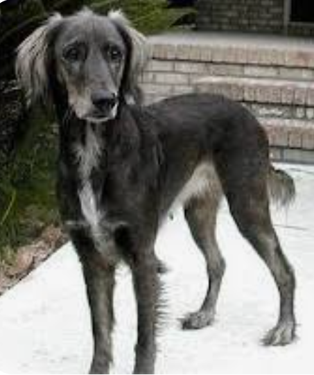
LargeAfghan Lab Hybrid
Afghan Hound elegance with Labrador friendliness in an active hybrid.
 Large
LargeAfghan Retriever Hybrid
Golden Retriever warmth combined with Afghan Hound elegance and speed.
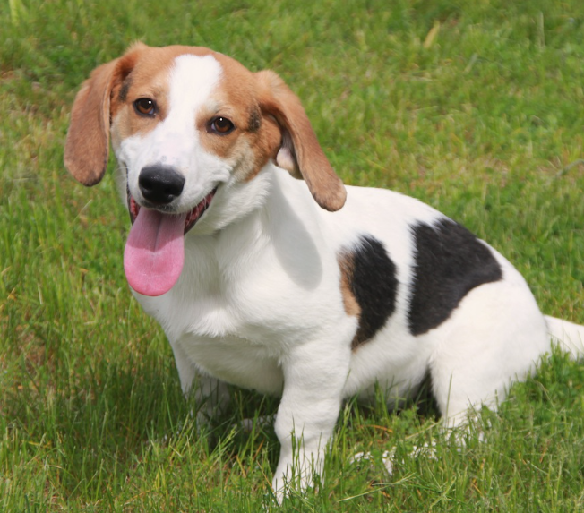
MediumBagle Hound Hybrid
Basset Hound low-key personality combined with Beagle nose and friendliness.
 Medium
MediumBassetoodle Hybrid
Basset Hound relaxed nature with Poodle intelligence and low-shedding coat.
 Large
LargeBoodle Hybrid
Old English Sheepdog flair combined with Poodle intelligence and low shedding.
 Large
LargeBorder Sheepdog Hybrid
Border Collie and Shetland Sheepdog both herding breeds of exceptional intelligence.
 Medium
MediumBorgi Hybrid
Border Collie herding intelligence with Corgi compact body and big personality.
 Large
LargeBorzoi Greyhound Hybrid
Two elegant sighthounds combined into supreme speed and grace.
 Large
LargeBorzoi Poodle Hybrid
Borzoi grace and speed with Poodle intelligence and reduced shedding coat.
 Medium
MediumBoxerpoo Hybrid
Boxer playful energy with Miniature Poodle intelligence and apartment size.
 Large
LargeBox Shepherd Hybrid
Boxer loyal energy combined with German Shepherd intelligence and protectiveness.
 Large
LargeBoxsky Hybrid
Boxer boundless energy with Siberian Husky striking looks and endurance.
 Large
LargeBriard Poodle Hybrid
Briard herding intelligence combined with Poodle trainability and wavy coat.
 Large
LargeBull Labrador Hybrid
Bull Terrier tenacity with Labrador warmth and trainability.
 Medium
MediumBull Pei Hybrid
English Bulldog calm with Chinese Shar-Pei loyalty and wrinkled charm.
 Small
SmallChin-Wa Hybrid
Japanese Chin elegance with Chihuahua loyal companionship in a tiny package.
 Small
SmallChion Hybrid
Chihuahua bold loyalty with Papillon butterfly beauty and intelligence.
 Large
LargeColtriever Hybrid
Border Collie herding intelligence with Golden Retriever warmth and friendliness.
 Giant
GiantDaniff Hybrid
Great Dane and Mastiff combined into a gentle, massive, and loyal companion.
 Small
SmallDoxle Hybrid
Dachshund determination with Beagle sociability and nose - curious scent hound.
 Medium
MediumEskie Husky Hybrid
American Eskimo Dog beauty with Siberian Husky endurance - striking Arctic hybrid.
 Small
SmallEskijack Hybrid
American Eskimo Dog elegance with Jack Russell Terrier explosive energy and drive.
 Medium
MediumEskimo Spitz Hybrid
American Eskimo Dog and Japanese Spitz - two white Spitz companions combined.
 Small
SmallEskipoo Hybrid
American Eskimo Dog fluff with Poodle intelligence and low-shedding coat.
 Large
LargeFlat-Coat Poodle Hybrid
Flat-Coated Retriever eternal joy with Poodle intelligence and low shedding.
 Large
LargeFlat-Coated Goldador Hybrid
Flat-Coated Retriever joy with Labrador Retriever friendliness - double retriever.
SmallFrench Boodle Hybrid
French Bulldog charm with Poodle intelligence - ideal compact apartment companion.
 Small
SmallFrengle Hybrid
French Bulldog charm with Beagle sociability - social and family-friendly.
 Small
SmallFrug Hybrid
French Bulldog and Pug - two wrinkled brachycephalic companions combined.
 Large
LargeGolden Rottie Hybrid
Golden Retriever warmth with Rottweiler loyal confidence - family guardian.
 Large
LargeGolden Shepherd Hybrid
Golden Retriever warmth with German Shepherd intelligence - outstanding family dog.
 Giant
GiantGreat Labradane Hybrid
Great Dane gentle giant with Labrador Retriever friendliness and sociability.
 Large
LargeGreat Shepherd Hybrid
Great Pyrenees guardian calm with German Shepherd intelligence - majestic guardian.
 Large
LargeGreat Swiss Rottweiler Hybrid
Greater Swiss Mountain Dog with Rottweiler power - Alpine working heritage.
 Small
SmallGriffon Poodle Hybrid
Brussels Griffon quirky expression with Poodle intelligence - uniquely charming.
 Small
SmallHavachon Hybrid
Havanese warmth with Bichon Frise playfulness - fluffy low-shedding companion.
 Small
SmallHavamalt Hybrid
Havanese warmth with Maltese elegance - silky and gentle tiny companion.
 🐕Large
🐕LargeHuskador Hybrid
Siberian Husky spirit with Labrador Retriever friendliness - energetic and social.
 Small
SmallIggy Poo Hybrid
Italian Greyhound elegance with Poodle intelligence and low-shedding coat.
 Small
SmallItalian Greybeagle Hybrid
Italian Greyhound speed with Beagle social nose - speedy scent hound.
 Small
SmallItalian Greyhuahua Hybrid
Italian Greyhound elegance with Chihuahua bold loyalty - ancient companion cross.
 Large
LargeKeeshond Husky Hybrid
Keeshond warmth with Siberian Husky endurance - striking Arctic Spitz hybrid.
 Medium
MediumKeeshond Poodle Hybrid
Keeshond warm sociability with Poodle intelligence and reduced shedding.
 Large
LargeKeeshond Shepherd Hybrid
Keeshond warmth with German Shepherd intelligence - alert and loyal companion.
 Large
LargeLabrottie Hybrid
Labrador Retriever friendliness with Rottweiler loyal confidence - family guardian.
 Large
LargeMali-Dutchie Hybrid
Belgian Malinois with Dutch Shepherd - elite working dogs combined for experts only.
 Large
LargeMalinois X Hybrid
Belgian Malinois with German Shepherd - supreme working dog for experts only.
 Small
SmallMiniature Puggle Hybrid
Pocket-sized Pug and Beagle cross - compact charm in a tiny package.
 Small
SmallMorkie Poo Hybrid
Maltese, Yorkshire Terrier, and Poodle triple cross for maximum cuteness.
 Small
SmallMorkshire Hybrid
Maltese gentle charm with Yorkshire Terrier bold personality - popular tiny dog.
 Giant
GiantNewfypoo Hybrid
Newfoundland water-rescuing giant with Poodle intelligence and reduced shedding.
 Small
SmallNorfolwich Hybrid
Norfolk Terrier and Norwich Terrier - nearly identical terrier siblings combined.
 Small
SmallNorwich Poo Hybrid
Norwich Terrier feisty spirit with Poodle intelligence and low-shedding coat.
 Small
SmallNorwich Schnauzer Hybrid
Norwich Terrier with Miniature Schnauzer - two wiry low-shedding terrier types.
 Small
SmallNorwich Yorkie Hybrid
Norwich Terrier with Yorkshire Terrier - two feisty British terriers combined.
 Small
SmallOri-Pei Hybrid
Chinese Shar-Pei loyalty with Pug charm - compact wrinkled companion.
 Small
SmallPaperanian Hybrid
Papillon butterfly beauty with Pomeranian fluffy charisma - tiny and brilliant.
 Small
SmallPapichon Hybrid
Papillon intelligence with Bichon Frise warmth and low-shedding coat.
 Small
SmallPapipoo Hybrid
Papillon top toy intelligence with Poodle trainability - brilliant tiny companion.
 Medium
MediumPoogle Hybrid
Poodle intelligence with Beagle sociability - friendly and low-shedding family dog.
 Medium
MediumPortuguese Doodle Hybrid
Portuguese Water Dog with Poodle - two water-loving working breeds combined.
 Medium
MediumPuggador Hybrid
Pug warmth with Labrador Retriever friendliness - approachable and sociable.
 Medium
MediumPuggle Beagle Backcross Hybrid
Puggle backcrossed to Beagle for more Beagle traits and reduced brachycephalic risk.
 Small
SmallPuggle Pug Backcross Hybrid
Puggle backcrossed to Pug for more Pug personality and compact wrinkled charm.
 Medium
MediumSharp Eagle Hybrid
Shar-Pei loyalty with Beagle curiosity and nose - wrinkled scent hound.
 Large
LargeSharpull Hybrid
Chinese Shar-Pei loyalty with Pit Bull strength - for experienced owners only.
 Small
SmallShelillon Hybrid
Shetland Sheepdog brilliance with Papillon butterfly elegance - graceful and brilliant.
 Medium
MediumSheltidoodle Hybrid
Shetland Sheepdog herding intelligence with Poodle trainability - outstanding doodle.
 🐕Large
🐕LargeShepweiler Hybrid
German Shepherd intelligence with Rottweiler power - powerful guardian for experts.
 Large
LargeShollie Hybrid
German Shepherd loyalty with Border Collie supreme intelligence - intense hybrid.
 Large
LargeSiberpoo Hybrid
Siberian Husky striking beauty with Poodle intelligence and low-shedding coat.
 Medium
MediumSprocker Hybrid
Springer Spaniel energy with Cocker Spaniel gentle nature - beloved British hybrid.
 Medium
MediumSproodle Hybrid
Springer Spaniel enthusiasm with Poodle intelligence and low-shedding coat.
 Large
LargeStaffweiler Hybrid
Staffordshire Bull Terrier tenacity with Rottweiler power - for experienced owners.
 Medium
MediumStaffy Bull Bulldog Hybrid
Staffordshire Bull Terrier with English Bulldog - compact British bull breed.
 Small
SmallTeddy Bear Dog (Zuchon) Hybrid
Shih Tzu with Bichon Frise - the living stuffed animal of the hybrid dog world.
 Large
LargeTervuren Husky Hybrid
Belgian Tervuren herding intelligence with Siberian Husky endurance and beauty.
 Large
LargeTervuren Shepherd Hybrid
Belgian Tervuren and German Shepherd - elite herding breeds combined.
 Small
SmallTox Hybrid
Toy Fox Terrier bold energy with Dachshund determination - tiny double hunter.
 Large
LargeVizmaraner Hybrid
Vizsla golden rust elegance with Weimaraner athletic grace - aristocratic hunter.
 Large
LargeVizsladoodle Hybrid
Vizsla velcro-dog loyalty with Poodle intelligence and low-shedding coat.
 Large
LargeWeimador Hybrid
Weimaraner athletic elegance with Labrador Retriever friendliness - active family dog.
 Small
SmallWire Foxoodle Hybrid
Wire Fox Terrier bold personality with Poodle intelligence and low-shedding coat.
 Small
SmallWire Jack Hybrid
Wire Fox Terrier bold spirit with Jack Russell Terrier explosive energy - for terrier lovers.
 Large
LargeAmerican Bulldog
Powerful, confident, and devoted
 Small
SmallAlaskan Klee Kai
A companion-sized husky with a sharp mind
 Large
LargeCatahoula Leopard Dog
Louisiana's striking all-purpose stock dog
 Large
LargeBlack Mouth Cur
The loyal Southern all-rounder of "Old Yeller" fame
 Medium
MediumCarolina Dog
America's ancient free-ranging "Dixie Dingo"
 Medium
MediumMountain Cur
The pioneer's rugged Appalachian treeing dog
 Medium
MediumMcNab Dog
California's tireless ranch herding dog
 Medium
MediumEnglish Shepherd
The classic all-purpose American farm dog
 Small
SmallTeddy Roosevelt Terrier
A low-set, muscular American ratting terrier
 Large
LargeOlde English Bulldogge
A healthier, athletic re-creation of the old bulldog
 Large
LargeAlapaha Blue Blood Bulldog
A rare, devoted plantation guardian from Georgia
 Large
LargeAmerican Leopard Hound
One of America's oldest treeing hounds
 Small
SmallMountain Feist
The spirited little squirrel dog of the rural South
 Medium
MediumSilken Windhound
A graceful, gentle small sighthound with a silky coat
Dingo
Australia's ancient free-living dog
Indian Pariah Dog
India's ancient native dog
Mudhol Hound
India's elegant Caravan Hound from Karnataka
Rajapalayam
Tamil Nadu's regal white guardian hound
Rampur Greyhound
North India's powerful royal coursing hound
 Large
LargeTamaskan Dog
A wolf-look companion bred for brains and family
 Large
LargeNorthern Inuit Dog
The "Game of Thrones direwolf" companion dog
 Medium
MediumSeppala Siberian Sleddog
The original working Siberian sled dog
 Medium
MediumChinese Chongqing Dog
An ancient, rare guardian from southwest China
 Large
LargeKunming Wolfdog
China's versatile military and police dog
 Medium
MediumPhu Quoc Ridgeback
Vietnam's agile island ridgeback
 Medium
MediumSapsali
Korea's shaggy "ghost-chasing" guardian
 Giant
GiantBully Kutta
The powerful "Pakistani Mastiff"
 Medium
MediumNew Guinea Singing Dog
The "singing" wild dog of the highlands
 Medium
MediumKoolie
Australia's versatile merle herding dog
 Small
SmallTenterfield Terrier
Australia's lively little ratting terrier
 Medium
MediumAfricanis
Southern Africa's ancient native dog
 Small
SmallRussian Spaniel
Russia's compact, cheerful gundog
 Giant
GiantMoscow Watchdog
Russia's gentle-giant guard dog
 Large
LargeEast European Shepherd
The Soviet military shepherd (VEO)
 Giant
GiantArmenian Gampr
Armenia's ancient mountain guardian
 Giant
GiantKarakachan (Bulgarian Shepherd)
Bulgaria's ancient flock-guarding mountain dog
 Large
LargeMucuchíes
Venezuela's national Andean mountain dog
No breeds found
Try a different search term or filter.